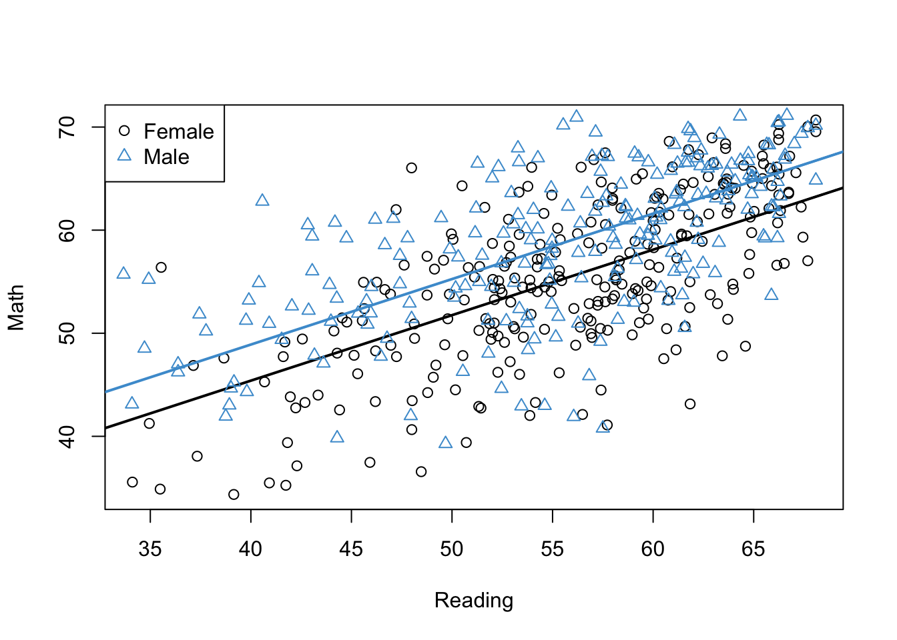
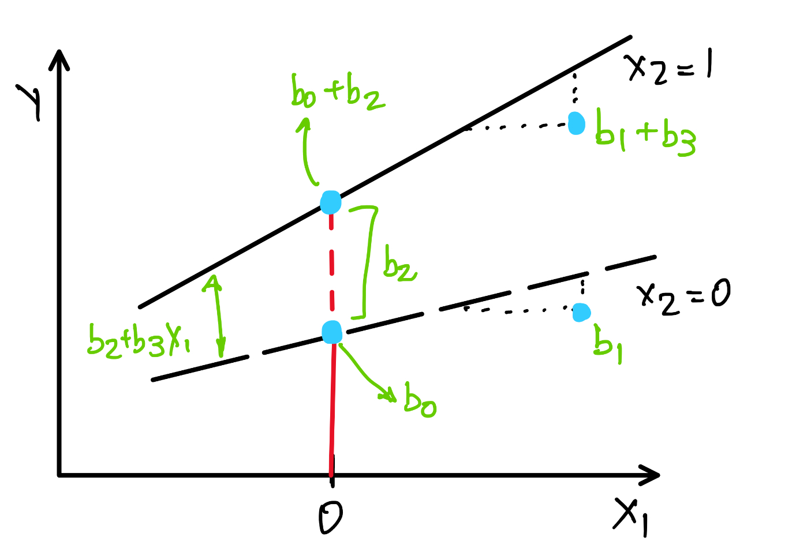
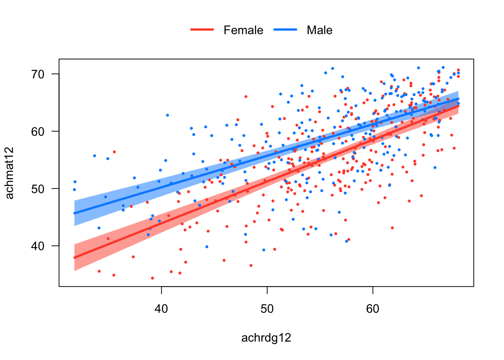
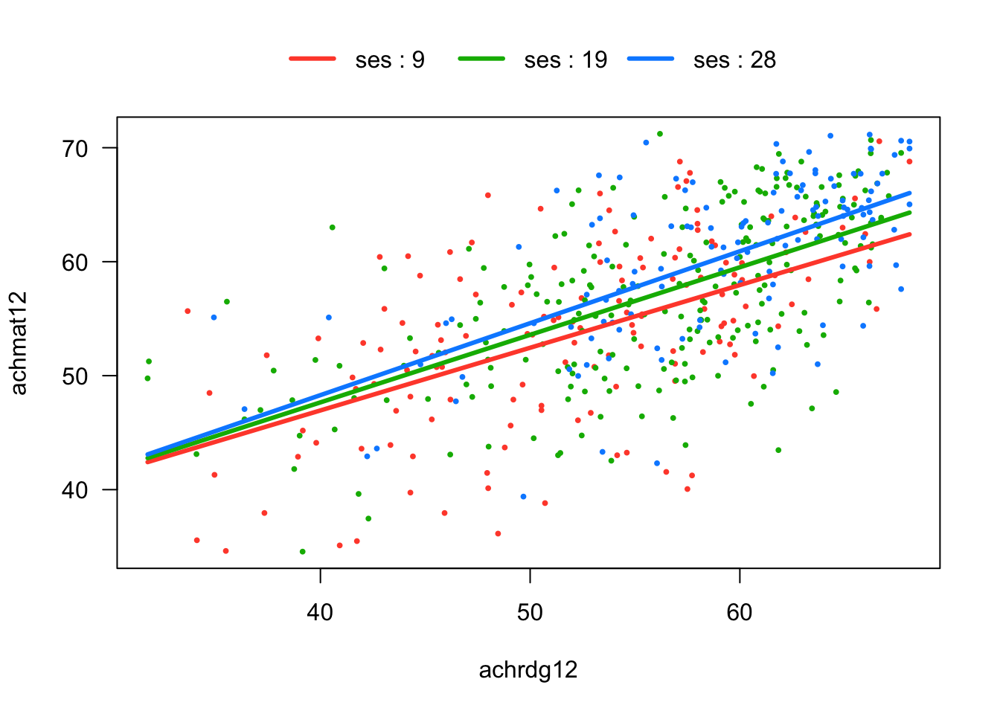
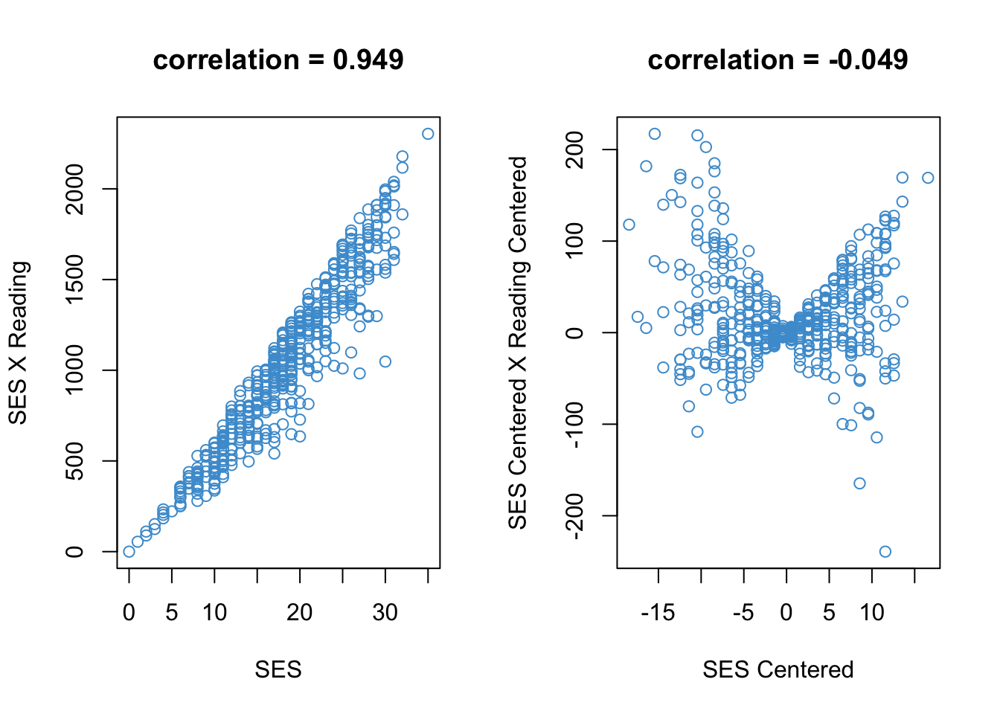

In statistics, the term interaction means that the relationship between two variables depends on a third variable. In the context of regression, we are usually interested in the situation where the relationship between the outcome \(Y\) and a predictor \(X_1\) depends on another predictor \(X_2\). This situation is also referred to as moderation or sometimes as effect heterogeneity.
Interactions are a big-picture idea with a lot conceptual power, especially when describing topics related to social inequality or “gaps”. Some examples of interactions are:
The relationship between wages and years of education depends on gender. This has been called the gender pay gap and it is considered a pretty important issue for gender equality (e.g., https://en.wikipedia.org/wiki/Gender_pay_gap).
I hope these examples convince you that some of the big issues facing education and society at large are actually about interactions – how the relationship between two variables depends on a third variable. In this chapter we are going to talk about how you can use regression to conduct research on these types of topics.
Some terminology: When we talk about statistical interactions, we often leave the outcome variable implicit and focus on the predictors. For example, the gender pay gap can be described as an interaction between gender and years of education. The outcome variable (wages) is implicit in this description. Throughout this chapter we are exclusively interested in interactions between two predictors at a time, which are called two-way interactions. There are actually three variables involved, because a two-way interaction also requires an outcome variable. It is possible to consider “higher-order” interactions (e.g., interactions among three predictors or three-way interactions) but we aren’t going to do that here. Sometimes we will use the terminology main effect to describe the relationship between each individual predictor and the outcome variable, as distinct from the interactions among the predictors. Up to now, we have be working with main effects only.
We start by considering what happens when both categorical and continuous predictors are used together in a multiple regression model. We use this combination of predictors as bridge from the previous chapter and as a way of digging into the math behind interactions. Later sections will consider what happens when we have interactions between two continuous predictors, or two categorical predictors.
It might be helpful to mention that this chapter gets pretty complicated and is very long (sorry!). It is definitely the hardest material we have covered so far, because we are drawing on everything we have done up to now and adding even more stuff into the mix. So, if these readings feel daunting at moments, that is to be expected. You might consider taking a break and doing the readings in smaller chunks. Also keep in mind that we are going to discuss all of this in class together, so just get what you can from these notes, provide some initial responses to the Workbook questions, and press on. This is where regression starts to get really interesting – you got this!
5.1 An example from NELS
For the first few sections of this chapter, we will focus on the gender gap in Math Achievement as our example (e.g., https://www.nctm.org/Publications/TCM-blog/Blog/Current-Research-on-Gender-Differences-in-Math/). The t-test reported below uses the NELS data to illustrate the gender gap in Math Achievement in 12th grade. The output shows that, on average, males scored about 3.18 percentage points higher than females on a Grade 12 Math test. This gap isn’t very big. However, it tends to grow rather than get smaller as students progress to higher grades, and it has implications for gender equality in STEM education and STEM professions.
Two Sample t-test
data: achmat12 by gender
t = -4.5529, df = 498, p-value = 6.658e-06
alternative hypothesis: true difference in means between group Female and group Male is not equal to 0
95 percent confidence interval:
-4.527002 -1.797687
sample estimates:
mean in group Female mean in group Male
55.47092 58.63326
In this chapter, our goal is to use linear regression to better understand the gender gap in Math Achievement. To help us do this, we will also consider a third variable, Reading Achievement. The plot below shows the relationship between Math Achievement and Reading Achievement estimated just for males (Blue), and the same relationship estimated just for females (Black).
Code
# Create indicators for females and malesfemales <- gender =="Female"males <- gender =="Male"# Regress math on reading, for each group separatelymod1 <-lm(achmat12[females] ~ achrdg12[females])mod2 <-lm(achmat12[males] ~ achrdg12[males])# Plot reading and math for femalesplot(achrdg12[females], achmat12[females], xlab ="Reading", ylab ="Math")abline(mod1, lwd =2)# Add again for malespoints(achrdg12[males], achmat12[males], col ="#4B9CD3", pch =2)abline(mod2, col ="#4B9CD3", lwd =2)# Add a legendlegend(x ="topleft", legend =levels(gender), pch =c(1, 2), col =c(1, "#4B9CD3"))
Figure 5.1: Math Achievement, Reading Achievement, and Gender.
Please take a minute to think about what this plot is telling us about the relationships among the three variables. In particular:
Does the gender gap in Math Achievement change as a function of Reading Achievement?
Is the relationship between Math Achievement and Reading Achievement the the same for males and females?
What do the results mean for gender equality in Math and STEM education?
Note that in Figure 5.1, we estimated two separate simple regression models, one just for males and one just for females. In the next few sections, we will work our way towards a single multiple regression model that can be used to represent the relationships among these three variables.
5.2 Binary + continuous
Let’s start by considering what happens when we include both Gender and Reading Achievement as predictors of Math Achievement in our usual multiple regression equation:
\[\widehat Y = b_0 + b_1X_1 + b_2 X_2 \tag{5.1}\]
where
\(Y\) is Math Achievement in grade 12
\(X_1\) is Reading Achievement in grade 12
\(X_2\) is Gender (binary, with female = 0 and male = 1)
Note that this model does not include an interaction between the two predictors – we are first going to consider what is “missing” from the usual regression model, and then use this to motivate inclusion of another predictor that represents the interaction. To get an initial sense of what is missing, the model in Equation 5.1 is plotted in Figure 5.2 using the NELS data – can you spot the difference with Figure 5.1?
Code
# Run the regressionmod3 <-lm(achmat12 ~ achrdg12 + gender, data = NELS)a_females <-coef(mod3)[1]b_females <-coef(mod3)[2]# Get the slope and intercept for malesa_males <- a_females +coef(mod3)[3]b_males <- b_females # Plot reading and math for femalesplot(achrdg12[females], achmat12[females], xlab ="Reading", ylab ="Math")abline(a_females, b_females, lwd =2)# Add points and line for malespoints(achrdg12[males], achmat12[males], col ="#4B9CD3", pch =2)abline(a_males, b_males, col ="#4B9CD3", lwd =2)# Add a legendlegend(x ="topleft", legend =levels(gender), pch =c(1, 2), col =c(1, "#4B9CD3"))

Figure 5.2: Math Achievement, Reading Achievement, and Gender (No Interaction).
In order to interpret our multiple regression model, we can use the same overall approach as we used to interpret categorical predictors in Chapter 4. If we plug-in values for the categorical predictor, we get:
\[
\begin{align}
\text{Predicted gender gap: } \widehat Y (Male) - \widehat Y (Female) & = b_2
\end{align}
\tag{5.4}\]
The equations for \(\widehat Y (Female)\) and \(\widehat Y (Male)\) are referred to as simple trends or simple slopes. These describe the regression of Math on Reading, simply for females, or simply for males. The difference between the two simple regression equations is the predicted gender gap in Math Achievement.
Based on these equations we can interpret regression coefficients as follows
The regression intercept, \(b_0\), is the intercept of the simple trend for the group coded “0” (i.e., the intercept of the regression of Math on Reading, simply for females; see Equation 5.2).
The regression slope for the continuous predictor, \(b_1\), is the slope of both of the simple trends (see Equation 5.2 and Equation 5.3)
The regression slope for the binary predictor, \(b_2\), is the difference between the intercepts of the simple trends (i.e., we add \(b_2\) to \(b_0\) to get the intercept of the regression of Math on Reading, simply for males; see Equation 5.3).
In this model, \(b_2\) is the also the predicted gender gap in Math Achievement (see Equation 5.4).
The regression coefficients for the example data are shown below. Please use these numbers to provide an interpretation of the simple trends and the gender gap in Math Achievement for the NELS example. (Don’t worry about statistical significance, just focus on the meaning of the coefficients reported in the “Estimate” column.)
Code
summary(mod3)
Call:
lm(formula = achmat12 ~ achrdg12 + gender, data = NELS)
Residuals:
Min 1Q Median 3Q Max
-19.2448 -3.6075 0.3968 3.9836 15.5606
Coefficients:
Estimate Std. Error t value Pr(>|t|)
(Intercept) 19.98122 1.86278 10.727 < 2e-16 ***
achrdg12 0.63551 0.03275 19.404 < 2e-16 ***
genderMale 3.50166 0.52473 6.673 6.69e-11 ***
---
Signif. codes: 0 '***' 0.001 '**' 0.01 '*' 0.05 '.' 0.1 ' ' 1
Residual standard error: 5.839 on 497 degrees of freedom
Multiple R-squared: 0.4538, Adjusted R-squared: 0.4516
F-statistic: 206.4 on 2 and 497 DF, p-value: < 2.2e-16
Here is an example to help you get started:
Simply for females, the regression of Math Achievement on Reading Achievement has an intercept equal to 19.98 and a slope equal to 0.64. The intercept tells us that a female student with Reading Achievement score of 0% is expected to have a Math Achievement score of 19.98% (the units of the two tests are percent correct). Since the lowest value of Reading Achievement in our example is about 35%, the intercept is not very meaningful for these data. The regression slope tells us that, for females, a 1 unit increase in Reading Achievement is associated with a .64 unit increase in Math Achievement.
Simply for males, ….
The gender gap in Math Achievement was equal to …
5.2.1 Marginal means
Before moving on to consider interactions, let’s revisit a topic from the previous chapter. In Chapter 4, we noted that the regression coefficients for categorical predictors (dummy variables) can be interpreted in terms of the group means of the outcome variable. However, when additional predictors are included in the regression model, this interpretation no longer holds. This section explains why.
To see what the issue is, let’s compare the output of the t-test in Section 5.1 with the regression output shown above. In the t-test, the mean Math Achievement for females was 55.47, and for males it was 58.63. The mean difference was
\[58.63 - 55.47 = 3.16\]
However, the regression coefficient on Gender in the multiple regression model above is equal to \(3.50\). Thus, unlike Chapter 4, the regression coefficient on Gender is no longer equal to the group-mean difference in Math Achievement. But why?
Remember that in the multiple regression model, the regression coefficient on Gender is interpreted as the relationship between Math Achievement and Gender, holding Reading Achievement constant. So, the regression coefficient on Gender is still interpreted as a mean difference, but now it is a predicted mean difference that represents the gender gap in Math Achievement after controlling for Reading Achievement. The t-test doesn’t control for Reading.
In order to emphasize the distinction between “raw” group means computed from the data and the predicted group means obtained from a multiple regression model, the latter are referred to as marginal means, or sometimes as adjusted means or least squares means. I think they should be called predicted means, but, alas.
5.2.2 Summary
In a regression model with one continuous predictor and one binary predictor (and no interaction):
The model results in two regression lines, one for each value of the binary predictor. These are called the simple trends.
The simple trends are parallel but can have different intercepts; the difference between the intercepts is equal to regression coefficient of the binary variable.
The difference between the simple trends is often called a “gap”, and the gap is also equal to the regression coefficient of the binary variable.
It is important to note that the predicted group means for the binary variable are no longer equal to the “raw” group means computed directly from the data, because the predicted group means control for the correlation between the predictors. The predicted group means are called marginal means to emphasize this distinction.
Keep in mind that this summary applies to the multiple regression model without an interaction. In the next section we improve our model by adding an interaction.
5.3 Binary + continuous + interaction
In this section, we discuss what was missing from the multiple regression model in the previous section: The interaction between Gender and Reading.
Mathematically, an interaction is just the product between two variables. Equation 5.5 shows how to include this product in our multiple regression model – we just take the product of the two predictors and add it into the model as a third predictor:
In terms of computation, we would literally take the product of our two predictors and save it as a new variable in our data set, then add the new variable in to the regression model. In practice, R will do all of this for us behind the scenes, so we don’t actually need to “hard code” new variables.
For the NELS example, the regression model with the interaction is depicted in Figure 5.3. Note the the simple trends are no longer parallel and the regression lines agree exactly with what we had in Section 5.1. So, as promised, we have now arrived at a single multiple regression model that captures the relationships among Math Achievement, Reading Achievement, and Gender.
Code
# Interaction via hard codinggenderXachrdg12 <- (as.numeric(gender) -1) * achrdg12mod4 <-lm(achmat12 ~ achrdg12 + gender + genderXachrdg12)# Get the coefficients for femalesa_females <-coef(mod4)[1]b_females <-coef(mod4)[2]# Get the coefficients for malesa_males <- a_females +coef(mod4)[3]b_males <- b_females +coef(mod4)[4]# Plot reading and math for femalesplot(achrdg12[females], achmat12[females], xlab ="Reading", ylab ="Math")abline(a_females, b_females, lwd =2)# Add points and line for malespoints(achrdg12[males], achmat12[males],col ="#4B9CD3", pch =2)abline(a_males, b_males, col ="#4B9CD3", lwd =2)# Add a legendlegend(x ="topleft",legend =levels(gender), pch =c(1, 2), col =c(1, "#4B9CD3"))
Figure 5.3: Math Achievement, Reading Achievement, and Gender (No Interaction).
To see how to interpret the coefficients in this model, let’s work through the model equations using our two-step procedure. As before, we first plug-in values for the categorical predictor, then we use the resulting equations solve for the simple trends and the gender gap in Math.
\[\begin{align}
\widehat Y (Male) - \widehat Y (Female) & = b_2 + b_3 X_1
\end{align} \tag{5.8}\]
These equations are summarized graphically below in Figure 5.4.

Figure 5.4: Interaction between a categorical and a continuous predictor. Image credit: Daniela Rodriguez-Mincey, Spring 2023
Based on the equations and figure, we can interpret regression coefficients as follows. Some of these interpretations are the same as in the previous section, but some are different.
The regression intercept, \(b_0\), is the intercept of the simple trend for the group coded “0” (i.e., the intercept of the regression of Math on Reading, simply for females; see Equation 5.6). This is the same interpretation as for the model without the interaction discussed in Section 5.2.
The regression slope for the continuous predictor, \(b_1\), is the slope of the simple trend for the group coded “0” (females; see Equation 5.6). This is different from the interpretation of the model in Section 5.2 – in that model, \(b_1\) was the slope of both simple trends, not just the trend for females.
The regression slope for the binary predictor, \(b_2\), is the difference between the intercepts of the simple trends (i.e., we add \(b_2\) to \(b_0\) to get the intercept of the regression of Math on Reading, simply for males; see Equation 5.7). This is the same interpretation as for the model without the interaction discussed in Section 5.2.
The regression slope for the interaction term (or simply, the interaction), \(b_3\), is the difference between the slopes of the simple trends (i.e., we add \(b_3\) to \(b_1\) to get the slope of the regression of Math on Reading, simply for males; see Equation 5.7). This is different from the interpretation of the model in Section 5.2 – in that model, \(b_1\) was the slope of both simple trends.
The difference between the predicted values (i.e., the predicted gender gap in Math Achievement) is no longer constant, but is instead a function of \(X_1\) (see Equation 5.8). In particular, the predicted gender gap in Math changes by \(b_3\) units for each unit of increase in Reading. This is different from the interpretation of the model in Section 5.2 – in that model, the predicted gender gap was constant over Reading and equal to \(b_2\).
This last point is especially important in the context of our example. The gender gap in Math Achievement is a function of Reading Achievement. This is the mathematical meaning behind the concept of an interaction – the relationship between two variables (Math and Gender) is changing as a function of a third variable (Reading).
5.3.1 Choosing the moderator
Interpreting interactions can feel a bit unwieldy at first. This section introduces some additional terminology that helps better align the mathematical results with the kinds of research scenarios we considered in the introduction to this chapter.
First, note that it is equally valid to say
the relationship between Math and Gender depends on Reading, or
the relationship between Math and Reading depends on Gender.
In other words, it is equally valid to interpret our interaction in terms of the gender gap (i.e., the relationship between Math and Gender) or in terms of the simple trends (the relationship between Math and Reading).
Although both interpretations are equally valid, in most research settings we will be more interested in one of them rather than the other. For example, our research interest in Section 5.1 was about the gender gap in Math Achievement. So, we can simplify our lives by focusing the gender gap (i.e., the relationship between Math and Gender). For the purpose of our example, the simple trends are an equivalent but less interesting way of interpreting the interaction. The point is: we don’t have to report both the simple trends and the gender gap – we usually just choose one.
In the two bullet points above, whichever variable appears in the “depends on” clause is called the moderator, and the other two variables are called the focal variables. The researcher chooses which variable to treat as the moderator when interpreting an interaction. The overall idea here is to “break down” the interaction in the way that is most compatible with your research question(s).
Since our focus is the gender gap in Math (i.e., the relationship is between Math and Gender), Reading is our moderator. In particular, we might interpret the interaction as follows
The predicted gender gap in Math changes by \(b_3\) units for each unit of increase in Reading.
By contrast, if we were mainly interested in the relationship between Math and Reading (i.e., the simple trends), then we could treat Gender as the moderator. For example, we might say:
For females, predicted Math Achievement changed by \(b_1\) units for each unit of increase in Reading, whereas for males, the predicted change was (\(b_1 + b_3\)) units for each unit of increase in Reading.
The simple trends might feel less intuitive than the gender gap, but the two interpretations are mathematically equivalent. It is just a matter of whether you want to interpret the interaction with reference to the gender gap, or with reference to the simple trends. When writing up your research, you don’t need to do both. But I am going to make you do both in the next section for practice.
5.3.2 Back to the example
The regression coefficients for the example data are shown below. Please use these numbers to provide an interpretation of the interaction between Gender and Reading. For practice, please attempt the interpret the interaction in terms of (a) the gender gap in Math, with Reading as the moderator; and (b) the relationship between Math and Reading, with Gender as the moderator. Don’t worry about statistical significance, just focus on the interpreting the coefficients reported in the “Estimate” column.
Code
summary(mod4)
Call:
lm(formula = achmat12 ~ achrdg12 + gender + genderXachrdg12)
Residuals:
Min 1Q Median 3Q Max
-19.0582 -3.7864 0.5014 4.0775 16.2889
Coefficients:
Estimate Std. Error t value Pr(>|t|)
(Intercept) 14.80310 2.64922 5.588 3.8e-08 ***
achrdg12 0.72824 0.04702 15.487 < 2e-16 ***
genderMale 13.39328 3.65828 3.661 0.000278 ***
genderXachrdg12 -0.17794 0.06514 -2.732 0.006524 **
---
Signif. codes: 0 '***' 0.001 '**' 0.01 '*' 0.05 '.' 0.1 ' ' 1
Residual standard error: 5.801 on 496 degrees of freedom
Multiple R-squared: 0.4619, Adjusted R-squared: 0.4586
F-statistic: 141.9 on 3 and 496 DF, p-value: < 2.2e-16
Some potential answers are hidden in the “Code” tab below, but don’t peak until you have tried it for yourself!
Code
# Gender gap# General: The gender gap in Math is smaller for students who are also strong in Reading# Specific: The gender gap in Math Achievement decreases by .18 percentage points for each percentage point increase Reading Achievement# Simple slopes# General: The relationship between Math and Reading is stronger (i.e. has a larger slope) for females than for males# Specific:# For females, Math scores are predicted to increase by .72 percentage points for each percentage point increase in Reading Achievement# For males, Math scores are predicted to increase by .55 percentage points for each percentage point increase in Reading Achievement
5.3.3 Centering the continuous predictor
You may have noticed that the regression coefficient on Gender was wildly different in regression models with and without the interaction. In the model without the interaction (Section 5.2) the coefficient on Gender was 3.50, and in the model with the interaction (above), it was 13.40. So in one model, the “effect” of being male was a 3.5 percentage point gain on a Math test, but in the other model, it was a 13.40 percentage point gain. Why this huge difference in the “effect” of Gender?
The answer can be seen in the equation for the gender gap. In the model without the interaction, the gender gap was constant and equal to the regression coefficient on Gender (denoted as \(b_2\) in the model):
\[\widehat Y (Male) - \widehat Y (Female) = b_2. \]
But in the regression model with the interaction, the gender gap was a linear function of Reading and the regression coefficient on Gender is the intercept of that linear relationship.
\[ \widehat Y (Male) - \widehat Y (Female) = b_2 + b_3 X_1. \]
This equation tell us that, in the model with the interaction, \(b_2\) is the gender gap for students who score 0% on the Reading test. Since the lowest score on Reading was around 35%, the intercept in this equation (i.e., \(b_2\), the regression coefficient on Gender) is not very meaningful.
In previous sections, we have ignored the regression intercept when it was not meaningful. But, ignoring the regression slopes for predictor variables can get confusing, and, in general, it is nice for the regression coefficients to be interpretable (otherwise, why are we doing this!).
One way to address this situation is to center Reading Achievement so that it has a mean of zero. To do this, we compute the deviation score
\[D_1 = X_1 - \bar X_1.\]
\(D_1\) is the mean-centered version of \(X_1\) (Reading Achievement). If we regress Math Achievement on \(D_1\) rather than \(X_1\) we end up with the following equation for the gender gap in Math:
\[\widehat Y (Male) - \widehat Y (Female) = b_2 + b_3 D_1\]
Since \(D_1 = 0\) when \(X_1 = \bar X_1\), the regression coefficient on Gender (\(b_2\)) is now interpretable as the gender gap in Math Achievement, for students with average Reading Achievement. This is a much more interpretable number than the coefficient in the original interaction model!
Using the example data, this approach yields the following regression coefficients (the _dev notation means the variable was centered):
Code
# compute the deviation scores for readingreading_dev <- achrdg12 -mean(achrdg12, na.rm = T) # Run the interaction model as abovegenderXreading_dev <- (as.numeric(gender) -1) * reading_devmod5 <-lm(achmat12 ~ reading_dev + gender + genderXreading_dev)summary(mod5)
Call:
lm(formula = achmat12 ~ reading_dev + gender + genderXreading_dev)
Residuals:
Min 1Q Median 3Q Max
-19.0582 -3.7864 0.5014 4.0775 16.2889
Coefficients:
Estimate Std. Error t value Pr(>|t|)
(Intercept) 55.29439 0.35127 157.411 < 2e-16 ***
reading_dev 0.72824 0.04702 15.487 < 2e-16 ***
genderMale 3.49930 0.52135 6.712 5.26e-11 ***
genderXreading_dev -0.17794 0.06514 -2.732 0.00652 **
---
Signif. codes: 0 '***' 0.001 '**' 0.01 '*' 0.05 '.' 0.1 ' ' 1
Residual standard error: 5.801 on 496 degrees of freedom
Multiple R-squared: 0.4619, Adjusted R-squared: 0.4586
F-statistic: 141.9 on 3 and 496 DF, p-value: < 2.2e-16
The regression coefficient for Gender is now pretty close to what it was in the multiple regression model without the interaction, but the interpretation is different (i.e., it is now the predicted gender gap in Math for students with an average level of Reading, rather than the predicted gender gap in Math for all students).
Notice that the intercept in the model above has also changed compared to the previous model in which Reading was not centered. This is should make sense based on what you already know about the regression intercept.
Also note that centering Reading did not affect the regression coefficient for Reading or the interaction. So, centering makes the regression slope on Gender more interpretable, but it doesn’t affect our overall interpretation of the simple trends or the gender gap. To learn more about how centering works, see Section 5.5.5 (which is optional).
Please write down your interpretation of the intercept and the regression coefficient on Gender in the above regression output, and be prepared to share your answer in class.
5.3.4 Summary
The interaction between two variables is just their product. When this product is added as a predictor in a multiple regression model with one continuous and one binary predictor:
The model again results in two regression lines (simple trends), one for each value of the binary predictor.
However, the simple trends can now have different intercepts and different slopes. The difference in slopes is equal to the regression coefficient on the interaction term. In other words, the simple trends have different slopes because of the interaction.
The difference (“gap”) between the regression lines changes as a linear function of the continuous predictor, and the slope of this linear function is again equal to the regression coefficient on the interaction term.
The last two points are equivalent ways of stating the central idea behind a (two-way) interaction: the relationship between two variables changes as a function of a third variable.
When interpreting an interaction, the researcher chooses which pair of variables will be the “focal relationship” and which variable will be the moderator.
In our example, we focused on the gender gap in Math (i.e., the relationship between Math and Gender) and Reading was the moderator.
But, if we were more interested in the relationship between Math and Reading, would could have focused on the simple trends and treated Gender as the moderator.
It is usual to only report one way of these two ways of “breaking down” the interaction – the one that is most relevant to your research question.
Centering the continuous predictor can be helpful for ensuring that the regression coefficient on the binary predictor remains interpretable in the presence of an interaction.
5.4 Following-up an interaction
The procedures discussed in this section are used typically used after we have concluded that there is a statistically significant between two predictors (i.e., after we have examined the summary(lm) output in the previous section). When we follow-up an interaction, the goal is to gain a better understanding of how the focal relationship depends on the moderator. Basically, the summary(lm) output from the previous section tells us whether or not the interaction is significant, and, if it is significant, the procedures discussed in this section let us describe the interaction in more detail.
The overall idea is illustrated Figure 5.5. Compared to the plots we have seen previously in this chapter, Figure 5.5 now includes confidence bands for the simple trends. The confidence bands show the values of Reading for which the gender gap in Math is statistically significant. In particular, it appears that the gap is not significant for students at the highest levels of Reading Achievement.
Note that this information was not available from the summary(lm) output in the previous section. The summary(lm) output told us that the interaction term was statistically significant, which means that the gender gap in Math changes as a function of reading. The plot provides more information about how the gender gap depends on Reading – it is statistical significant for students at lower levels of Reading Achievement, but appears to shrink and eventually disappear as Reading Achievement increases.
Code
# Install the package if you haven't already done so# install.packages("visreg")# Load the package into memorylibrary(visreg)# Run the regression model using R's syntax for interactions "*"mod6 <-lm(achmat12 ~ gender*achrdg12, data= NELS)# One line of code to plot trends with confidence bands :) visreg(mod6, xvar ="achrdg12", by ="gender", overlay =TRUE)

Figure 5.5: Example of a plot using the visreg package.
In this section, we discuss how to translate the confidence bands in the plot into statistical tests that can provide more specific information about the how the gender gap in Math depends on Reading. Making these kinds of inferences about interactions is one of the main advantages of using multiple regression rather than just fitting the simple trends separately as we did in Section 5.1. Another advantage is that we can now easily produce nice plots like Figure 5.5 :)
Before moving on, it is important to emphasize that, if the interaction term in the summary(lm) output is not significant, we don’t use the procedures discussed in this section. This is because a non-significant interaction means that we have inferred the focal relationship does not depend on the moderator. Consequently, there is no need to describe this dependence in more detail, which is what the procedures in this section are for.
5.4.1 Marginal effects
Since we are interested in the gender gap in Math Achievement, we will start by considering the values of Reading for which the gap is statistically significant. Note that this information was not available from the standard summary(lm) output shown in Section 5.3 – the output showed that the regression coefficient representing the interaction was statistically significant, but it didn’t tell us for the values of Reading for which the gender gap was statistically significant. We can answer this type of question using the marginal “effects” discussed in this section.
There are three main types of marginal effects. For linear models, they are all basically the same, and we will only use one of them in this section. However, it is important that you can distinguish among them, especially when we get into non-linear models (e.g., logistic regression; see ?sec-chap-10). In general, when you report marginal effects in your research, you should be able to tell your reader which approach you used so they understand what you did and how to interpret the results.
To explain the three approaches, first let’s write the gender gap in Math Achievement using a slightly more compact notation (“\(\Delta\)” for difference):
\[ \widehat Y (Male) - \widehat Y (Female) = b_2 + b_3 X_1 = \Delta(X_1)\]
The three types of marginal effects are:
Marginal effects at the mean (MEM): Report the gap at the mean value of \(X_1\)
\[MEM = \Delta(\bar X_1) \]
Average marginal effect (AVE): Average the effect over values of \(X_1\):
\[AVE = \frac{\sum_i \Delta(X_{i1})}{N} \]
Marginal effects at representative values (MERV): Report the marginal effect for a range of “interesting values” chosen by the researcher (denoted by *, \(\dagger\), etc.)
MEM and AVE are equivalent in linear models, but are different for nonlinear models (see ?sec-chap-10). The MERV approach also overlaps with MEM and AVE, because usually we choose the mean (or median) as one of the representative values of the predictor.
In this section we focus on MERV, because it is widely used. One common choice for the “interesting values” is the quartiles of \(X_1\), which are reported below for the example data. The output shows the gender gap in Math Achievement for 5 values of Reading Achievement. The values of Reading Achievement are its 5 quartiles. You can think of the output as a tabular summary of Figure 5.5.
Code
# Install the emmeans package if you haven't already done so# install.packages("emmeans")# Load the package into memorylibrary(emmeans)# Fit the model using R's formula syntax for interaction '*'mod6 <-lm(achmat12 ~ gender*achrdg12, data = NELS)# Use the emmeans function to get the gender means on math, broken down by readinggap <-emmeans(mod6, specs ="gender",by ="achrdg12", cov.reduce = quantile)# Test whether the differences are significantcontrast(gap, method ="pairwise")
achrdg12 = 31.8:
contrast estimate SE df t.ratio p.value
Female - Male -7.74 1.637 496 -4.728 <.0001
achrdg12 = 51.3:
contrast estimate SE df t.ratio p.value
Female - Male -4.27 0.593 496 -7.207 <.0001
achrdg12 = 57.0:
contrast estimate SE df t.ratio p.value
Female - Male -3.25 0.529 496 -6.138 <.0001
achrdg12 = 61.7:
contrast estimate SE df t.ratio p.value
Female - Male -2.41 0.658 496 -3.659 0.0003
achrdg12 = 68.1:
contrast estimate SE df t.ratio p.value
Female - Male -1.28 0.967 496 -1.321 0.1872
Please use the output to make a conclusion about the levels of Reading Achievement for which the gender gap was significant. Please be prepared to share your answer in class!
In this section we test whether the slope of each of the simple trends is significantly different from zero. Like the marginal effects in the previous section, this is information was not entirely available in the summary(lm) output discussed in Section 5.3. From the summary(lm) output we learned the following two points about the simple trends:
The regression coefficient on Reading told us about the relationship between Math and Reading, simply for the group designated as zero on the binary predictor (simply for females).
The regression coefficient on the interaction term told us whether the simple trends differ for the two groups (e.g., whether the simple trend for males differs from the simple trend for females).
Note that what is missing, or implicit, is a test of whether the simple trend for males is different from zero. This test is of less relevance to our example (since we are treating Reading as the moderator), but we consider it for illustrative purposes.
The tests of the simple trends for the example data are reported below. As stated, these aren’t super interesting in the context of our example, but you should check your understanding of simple trends by writing down an interpretation of the output below.
Code
# The regression coefficients on reading, broken down by gendersimple_slopes <-emtrends(mod6, var ="achrdg12", specs ="gender")test(simple_slopes)
gender achrdg12.trend SE df t.ratio p.value
Female 0.728 0.0470 496 15.487 <.0001
Male 0.550 0.0451 496 12.208 <.0001
5.4.3 Summary
When making inferences about an interaction:
If the interaction isn’t significant in the summary(lm) output, we stop there. But if the interaction is significant, we may want to report more information about how the focal relationship depends on the moderator.
When the focal predictor is categorical, we can follow-up a significant interaction by taking a closer look at the statistical significance of the marginal effects (e.g, how the gender gap in Math changes as a function of Reading)
When the focal predictor is continuous, we can follow-up a significant interaction by taking a closer look at the statistical significance of the simple trends / simple slopes.
5.5 Two continuous predictors
At this point, we have covered the main ideas behind two-way interactions. In this section and the next, we apply these ideas to different combinations of predictors variables. In this section we address interactions between two continuous predictors. In the next section we address two categorical predictors. In both cases, the regression equation and overall interpretation is the same as the previous sections – e.g., the relationship between \(Y\) and \(X_1\) changes as a function of \(X_2\). However, there are also some special details that crop up in these different settings.
In this section we will address:
The importance of centering the two continuous predictors. Centering helps us interpret the “main effects” (i.e., the regression coefficients on the individual predictors).
How to follow-up a significant interaction using simple trends. As was the case for a categorical and a continuous predictor, this helps us interpret the interaction in more detail.
First, we introduce an new example.
5.5.1 Another NELS example
To illustrate an interaction between two continuous predictors, let’s replace Gender with SES in our previous analysis. Apologies that this new example is mainly for convenience and doesn’t represent a great research question about, e.g., why the relationships between Math and Reading might change as a function of SES.
The overall approach with SES as the moderator is illustrated in Figure 5.6 below. It presents the simple trends for Math and Reading at three values of SES. The overall situation should hopefully feel pretty familiar from the previous sections. The displayed values of SES (9, 19, and 28) are its 10th, 50th, and 90th percentiles, which is the default choice for the software we are using for plotting. For visual clarity, the confidence bands are not shown.
Code
#Interaction without centering mod7 <-lm(achmat12 ~ achrdg12*ses, data = NELS)# Note that band = F removes the confidence intervalsvisreg(mod7, xvar ="achrdg12", by ="ses", overlay =TRUE, band = F)

Figure 5.6: Math (achmat), Reading (achrdg), and SES
5.5.2 Centering the predictors
The take home message of this section is that you should center continuous predictors when their interaction is included in the model. There are two reasons:
Just like Section 5.3, centering makes it easier to interpret the “main effects” (i.e., the regression coefficients on the individual predictors).
Centering can make the estimates of the main effects more precise. This is because centering can reduce the correlation between the individual predictors and the interaction term. Remember from Section 3.7.1 that highly correlated predictors lead to less precise estimates of the regression coefficients. We discuss this problem in more detail in ?sec-multicollinearity-6, but for now we just discuss how centering helps us avoid the problem.
First lets consider how centering facilitates interpretation. Begin by noting that the coefficients \(b_1\) and \(b_2\) in the regression model
The first equation shows us that \(b_1\) is the slope of relationship between \(Y\) and \(X_1\), when \(X_2\) is equal to zero – in our example, the relationship between Math and Reading when SES is equal to zero. Similarly, the second equation shows us that \(b_2\) is the slope of relationship between \(Y\) and \(X_2\) when \(X_1\) is equal to zero – in our example, the relationship between Math and SES when Reading is equal to zero.
In general, the value of zero may not be meaningful for continuous predictors. But, when the predictor is centered (i.e., a deviation score), the value of zero is always the mean of the original variable. For example, if we centered SES, then \(b_1\) would represent the relationship between Math and Reading for students with average SES. Similar considerations apply if we treat Reading as the moderator instead of SES. Note that this is just the same trick as Section 5.3, but this time both predictors are continuous and so both can be centered.
The second main reason for centering is a bit more technical. It has to do with reducing the correlation between the predictors and their interaction. In general, the interaction term will be correlated with both predictors if (a) the predictors themselves are correlated and (b) both predictors take on strictly positive (or strictly negative) values. Highly correlated predictors lead to redundant information the model, so we want to avoid this situation (this is technically called multicollinearity and we discuss it in more detail in a ?sec-multicollinearity-6).
To see how centering can reduce the correlation between the predictors and their interaction, let’s take a look at Figure 5.7. The left hand panel shows the relationship between SES and its interaction with Reading. We can see that they are highly correlated. This is because (a) SES and Reading are themselves correlated, and (b) both SES and Reading take on strictly positive values. As mentioned above, the interaction term will be correlated with both predictors whenever these two conditions hold. (The figure shows the correlation just for SES and the interaction, but the same situation holds for Reading.)
Code
# Correlation without centeringr <-cor(ses, achrdg12*ses)# Plotpar(mfrow =c(1, 2))title <-paste0("correlation = ", round(r, 3))plot(ses, achrdg12*ses, col ="#4B9CD3", main = title, xlab ="SES", ylab ="SES X Reading")# Correlation with centeringachrdg12_dev <- achrdg12 -mean(achrdg12)ses_dev <- ses -mean(ses)r <-cor(ses_dev, achrdg12_dev*ses_dev)# Plottitle <-paste0("correlation = ", round(r, 3))plot(ses_dev, achrdg12_dev*ses_dev, col ="#4B9CD3", main = title, xlab ="SES Centered", ylab ="SES Centered X Reading Centered")

Figure 5.7: Correlation Between SES and SES X Reading, With and Without Centering
We can see in the right hand panel of Figure 5.7 how centering the two predictors “breaks” the linear relationship between SES and its interaction with Reading. After centering, the relationship between SES and its interaction is now highly non-linear, and the correlation is approximately zero. Again, the same is true for the relationship between Reading and the interaction, but the figure only shows the situation for SES. The upshot of all this is that centering reduces multicollinearity between the “main effects” of the predictors and their interaction.
Below we show the output for two regression models. Both models regress Math on Reading, SES, and their interaction. The first model does not center the predictors, but the second model does (the _dev notation denotes the centered predictors).
The main difference between the models is that SES is a significant predictor in the centered model but not in the “un-centered” model. This is because the main effect of SES has a different meaning in the centered model, and it is also less correlated with the interaction. This is also true for Reading, but the differences between the two sets of results are less pronounced for Reading.
Code
# Without centeringmod7 <-lm(achmat12 ~ achrdg12*ses)summary(mod7)
Call:
lm(formula = achmat12 ~ achrdg12 * ses)
Residuals:
Min 1Q Median 3Q Max
-17.1336 -3.8944 0.7278 4.1301 15.0153
Coefficients:
Estimate Std. Error t value Pr(>|t|)
(Intercept) 25.849200 5.389797 4.796 2.14e-06 ***
achrdg12 0.511601 0.099427 5.145 3.85e-07 ***
ses -0.100114 0.291214 -0.344 0.731
achrdg12:ses 0.004270 0.005196 0.822 0.412
---
Signif. codes: 0 '***' 0.001 '**' 0.01 '*' 0.05 '.' 0.1 ' ' 1
Residual standard error: 6.031 on 496 degrees of freedom
Multiple R-squared: 0.4184, Adjusted R-squared: 0.4149
F-statistic: 118.9 on 3 and 496 DF, p-value: < 2.2e-16
Code
# With centeringmod8 <-lm(achmat12 ~ achrdg12_dev*ses_dev)summary(mod8)
Call:
lm(formula = achmat12 ~ achrdg12_dev * ses_dev)
Residuals:
Min 1Q Median 3Q Max
-17.1336 -3.8944 0.7278 4.1301 15.0153
Coefficients:
Estimate Std. Error t value Pr(>|t|)
(Intercept) 56.826225 0.286906 198.065 <2e-16 ***
achrdg12_dev 0.590313 0.036103 16.351 <2e-16 ***
ses_dev 0.137305 0.041485 3.310 0.001 **
achrdg12_dev:ses_dev 0.004270 0.005196 0.822 0.412
---
Signif. codes: 0 '***' 0.001 '**' 0.01 '*' 0.05 '.' 0.1 ' ' 1
Residual standard error: 6.031 on 496 degrees of freedom
Multiple R-squared: 0.4184, Adjusted R-squared: 0.4149
F-statistic: 118.9 on 3 and 496 DF, p-value: < 2.2e-16
Please provide an interpretation of all four regression coefficients in the centered model. Your interpretations should make reference to the situation where one or both predictors are equal to zero (see Equation 5.9 above) and should also mentioned the interpretation of the value of zero for the centered variables.
Note that the interaction and the R-squared are the same in the centered and uncentered models. This is discussed in more detail in the extra material at the end of this section (Section 5.6), but it is sufficient to note that centering only affects the interpretation of the main effects (and the intercept, of course).
5.5.3 Simple trends
Centering helps us interpret the main effects of the individual predictors, but we haven’t yet discussed how to interpret the interaction term. As shown in Figure 5.6, the overall situation is not that different than with a binary predictor.
The usual way to follow up a significant interaction between two continuous is using the MERV approach discussed in Section 5.4. Using this approach, we consider the focal relationship for some “interesting values” of the moderator. As with MERV, the choice of values of the moderator is up to the researcher, but some usual choices are
The quartiles of the moderator
M \(\pm\) 1 SD of the moderator
A selection of percentiles of the moderator (The visreg plot in Figure 5.6 uses the 10th, 50th, and 90th)
These are all doing very similar things, so choosing among them usually isn’t super important.
Although the interaction between Reading and SES was not significant in our example model, let’s break down the interaction using SES as the moderator, just to see how this approach works. The output below presents the simple slopes for the three values of SES shown in Figure 5.6 (i.e., the 10th, 50th, and 90th percentiles). We can see in the output that the simple slopes are all different from zero. (And the non-significant interaction in the summary(lm) output tells us that the slopes are not statistically different from one another.)
Code
# Break down interaction with SES as moderatorsimple_slopes <-emtrends(mod7, var ="achrdg12", specs ="ses", at =list(ses =c(9, 19, 28)))test(simple_slopes)
When regressing an outcome on two continuous predictors and their interaction, the overall interpretation of the model is same as discussed in Section 5.3, but:
It is useful to center both predictors, to facilitate the interpretation of the main effects (i.e., regression coefficients on the individual predictors), and to improve the precision of the main effects (i.e., reduce multicollinearity).
When following up a significant interaction, the usual approach is to report the simple trends for the focal variables at a selection of values of the moderator (e.g., a selection of percentiles). The example illustrated how to do this even though the interaction was not significant, but you shouldn’t follow up a non-significant interaction.
5.5.5 Extra: How centering works*
It might seem that centering both predictors is a bit dubious – how can we just change the predictors in the model? This sections shows that using the centered or the un-centered predictors doesn’t make a difference in term of what predictors are in the model, it just changes the interpretation of the main effects (and intercept).
Using \(D = X - \bar X\) for the centered variables, simple algebra shows:
The second line of the equation shows that we are not changing what we regress \(Y\) on – i.e., the predictors are still \(X_1\) and \(X_2\). We are changing the interpretation of the main effects (and intercept), but this is exactly the purpose of this approach. Also note centering does not change the regression coefficient for the interaction at all. So, we get main effects (and intercept) that can be more easily interpreted, and the same interaction
5.6 Two categorical predictors
This section addresses interactions between two categorical predictors. Up until now, we have looked at interactions only for categorical predictors that are dichotomous. In this section, we address an example in which one of the categorical predictors has more than two levels. This requires combining what we learned about contrast coding (Chapter 4) with what we have learned about interactions. One nice aspect of interactions among categorical predictors is that we usually don’t need to use procedures like marginal effects to follow up significant interactions, so long as we make good use of contrast coding.
In experimental (as opposed to observational) settings, interactions among categorical predictors fall under the much larger topic of ANOVA and experimental design. The analysis we look at in this section is a two-way between-subjects ANOVA, meaning that there are two categorical predictors considered, as well as their interaction, and both predictors are cross-sectional. ANOVA is a big topic and is not the focus of this course. However, we will discuss how to summarize the results of our analysis in an ANOVA table, and consider how this differs from the standard regression approach.
5.6.1 An example from ECLS
For this topic we will switch over to the ECLS data and examine how SES and Pre-K attendance interact to predict Math Achievement at the beginning of Kindergarten. The variables we will examine are
Math Achievement at the beginning of K (c1rmscal). This is the number of correct questions on a test with approximately 70 items.
Whether the child attended Pre-K (p1center). This is a binary variable that indicates pre-K attendance.
SES, coded as quintiles (wksesq5). We will denote this variable as SES, but keep in mind it is quintiles in this example (e.g., SES = 1 are the respondents with SES between the minimum and the first quintile).
Coding SES as quintiles allows us to consider it as a categorical predictor with 5 levels. This is a widely-used practice, because SES often has non-linear relationships with outcome variables of interest, and these relationships can be more easily captured by treating SES as a categorical variable. This approach to SES is also convenient for our illustration of interactions between categorical predictors.
In this analysis, our focus will be whether the “effect” of Pre-K on Math Achievement depends on (i.e., is moderated by) the child’s SES. Please note that I will use the term “effect” in this section to simplify language, but we know that Pre-K attendance was not randomly assigned in ECLS, so please keep in mind that this terminology is not strictly correct.
The relationship among the three variables is summarized in the visreg plot below. We can see that the effect of Pre-K on Math Achievement appears to differ as a function of SES – i.e., it appears that there is an interaction between Pre-K and SES. Our goal in this section is to produce an analysis corresponding to the figure.
Figure 5.8: Math Achievement, Pre-K Attendence, and SES
Before moving on, please take a moment to write down your interpretation of Figure 5.8, focussing on how it illustrates an interaction between SES and Pre-K. Additionally, please describe how the figure would be different if there was no interaction between Pre-K and SES.
5.6.2 The “no-interaction” model
As in Section 5.2, we will start with a model that includes only the main effects of SES and Pre-K. Seeing where that model “goes wrong” is a good way of understanding the interaction between the two predictors.
In order to represent a model with multiple categorical predictors, it is helpful to change our notation from the usual \(Y\) and \(X\) to the more informative “variable names” notation:
In this notation, the predictor variables are indicators (binary dummies). The variable \(PREK\) is just the indicator for Pre-K attendance, as defined above. The variable \(SES_j\) is an indicator for the j-th quintile of SES.
Both predictors use reference-group coding, as discussed in Chapter 4. For \(PREK\), reference-group coding is implied because it is a binary indicator. For \(SES\), reference-group coding is accomplished by omitting the binary dummy for the first quintile (i.e., the first quintile is the reference group).
We can interpret the coefficients in this model using the same two-step procedure described in Chapter 4. Since there are many terms in the model, things are going to start getting messy quickly, so brace yourself for some long equations (but simple math!).
The main points about the interpretation of this model are as follows.
The intercept is the predicted value of Math Achievement for students in the first SES quintile who did not attend Pre-K. This corresponds to the blue line in the first column of Figure 5.8.
The effect of Pre-K attendance for students in the first SES quintile is equal to \(b_1\). This corresponds to the difference between the red and blue lines in the first column of Figure 5.8.
\[\begin{align}
\widehat Y(PREK = 1, SES = 1) - \widehat Y(PREK = 0, SES = 1) & = b_1
\end{align}\]
Because the model in Equation 5.10 does not include an interaction, we already know that it implies that the effect of Pre-K is constant over levels of SES. Below we show that effect of Pre-K for SES = 2 is the same as the effect for SES = 1. The same approach can be used to show the effect is constant over all levels of SES. Note that while the model assumes the effect of Pre-K is constant over levels of SES, this is actually inconsistent with what is shown in Figure 5.8. We will improve on this model by adding an interaction in the following section.
\[\begin{align}
\widehat Y(PREK = 1, SES = 2) - \widehat Y(PREK = 0, SES = 2) = b_1
\end{align}\]
This equation says that the difference between the red and blue lines in the second column of Figure 5.8 is the same as the difference in the first column – i.e., they both equal \(b_1\). This is what it means for there to be no interaction between two categorical predictors.
If you want more practice with this, you can show that Equation 5.10 implies the effect of Pre-K is constant over all levels of SES. Additionally, you can use the 2-step approach to show that the effect of SES is constant over levels of Pre-K attendance.
5.6.3 Adding the interaction(s)
We have just seen that Equation 5.10 implies that the effect of Pre-K is constant over levels of SES, and vise versa. In order to address our research question about whether the relationship between Pre-K attendance and Math Achievement depends on children’s SES, we will need to add something to the model – an interaction (surprise!).
We know that interactions are just products (multiplication) of predictor variables. Since SES is represented as 4 dummies, this means we need 4 products to represent the interaction of Pre-K with SES. The resulting model can be written:
As you can see, we have a lot of predictors in this model! Although we are only considering two distinct “conceptual” predictors, we have 9 coefficients in our regression model (+ the intercept).
Again, there are a few main things to notice:
The interpretation of the intercept has not changed. It still corresponds to the blue line in the first column of Figure 5.8.
The regression coefficient on \(PREK\) is still the “effect” of Pre-K for students in the first SES quintile (i.e., the difference between the red and blue line in the first column of Figure 5.8). This is because all the \(SES_j\) variables are equal to zero for students in the first SES quintile, and so all of the interaction terms in Equation 5.11 are equal to zero.
The effect of Pre-K is no longer constant over levels of SES. Again we will focus on SES = 2, but the same approach works for the other levels of SES.
The last line shows that the “effect” of Pre-K for students in the second SES quintile is \(b_1 + b_6\). This is not the same as the effect for students in the first quintile, which was just \(b_1\). In other words, the difference between the red and blue lines in the first column of Figure 5.8 (i.e., \(b_1\)) is not equal to the difference in the second column (i.e., \(b_1 + b_6\)) unless the interaction is equal to zero (i.e., \(b_6 = 0\)).
The same approach shows that the effect of Pre-K at each level of SES results in a similar equation:
This pattern makes it clear that, to isolate the interactions (i.e., \(b_6\) through \(b_9\)), we need to subtract off \(b_1\) – i.e., we need to subtract off the effect of Pre-K for students in the first SES quintile. In anology with reference group coding for single predictor (see Section 4.4), we can think of \(b_1\) the “reference effect” or baseline to which the interaction terms are compared.
For example
The interaction between Pre-K and the second SES quintile is the effect Pre-K has on Math Achievement for students in the second SES quintile, as compared to the effect in the first SES quintile.
The interaction between Pre-K and the third SES quintile is the effect Pre-K has on Math Achievement for students in the 3rd SES quintile, as compared to the effect in the first SES quintile.
etc. etc.
Mathematically, the interaction terms are represented as “differences-in-differences”. For example,
\[\begin{align}
b_6 & = [\widehat Y(PREK = 1, SES = 2) - \widehat Y(PREK = 0, SES = 2)] - b_1 \\
& = [\widehat Y(PREK = 1, SES = 2) - \widehat Y(PREK = 0, SES = 2)] \\
& - [\widehat Y(PREK = 1, SES = 1) - \widehat Y(PREK = 0, SES = 1)]
\end{align}\]
This looks quite complicated but it is just an extension of reference-group coding. This equation is saying that the “reference effect” or “baseline” for interpreting the interaction (\(b_6\)) is the effect of Pre-K in the first SES quintile (i.e., \(b_1\)). As noted above, all of the interaction terms have the same reference effect.
5.6.4 Back to the example
That last section was a lot to take in, so let’s put some numbers on the page to check our understanding. The output below shows the summary for a model that regresses Math Achievement on Pre-K, SES, and their interaction. Please write down an interpretation of magnitude, direction, and statistical significance of each regression coefficient in this output (including the intercept), and be prepared to share your answers in class. Remember that wksesq5 is the variable code for the SES quintiles – the digit that follows the variable code indicates the level of variable. It may be helpful to refer to Figure 5.8 when interpreting the coefficients.
Code
mod <-lm(c1rmscal ~ prek*wksesq5, data = ecls)summary(mod)
The output in the previous section is detailed enough that it is not usually required to follow-up a significant interaction among categorical predictors using marginal effects. However, the summary output still omits some information we might be interested in. For example, the Pre-K indicator in the above output tells us the effect of Pre-K, but only for children in the first SES quintile. We might also want to know about the overall effect of Pre-K across levels of SES – i.e., is there a significant difference in Math Achievement for students who attended Pre-K, after controlling for their level of SES? Similarly, what is the overall main effect of SES?
One way to summarize the main effects of Pre-K and SES, as well as their interaction, by asking how much variance they explain after controlling for the other predictors in the model. This is the ANOVA approach we discussed last semester, but now applied to two categorical predictors.
The ANOVA table for our example is below, and it is followed by the R-squared coefficients for each predictor, which are called “eta-squared” (\(\eta^2\)) in the context of ANOVA. These R-squared (eta-squared) coefficients tell us what proportion of the variance in Math Achievement is attributable to the main effects and the interaction.
Code
# ANOVA Tableanova(mod)
Analysis of Variance Table
Response: c1rmscal
Df Sum Sq Mean Sq F value Pr(>F)
prek 1 3434 3434.3 72.1437 <2e-16 ***
wksesq5 4 19914 4978.4 104.5805 <2e-16 ***
prek:wksesq5 4 299 74.7 1.5701 0.1795
Residuals 2567 122198 47.6
---
Signif. codes: 0 '***' 0.001 '**' 0.01 '*' 0.05 '.' 0.1 ' ' 1
# Effect Size for ANOVA (Type I)
Parameter | Eta2 | 95% CI
--------------------------------------
prek | 0.02 | [0.01, 1.00]
wksesq5 | 0.14 | [0.12, 1.00]
prek:wksesq5 | 2.05e-03 | [0.00, 1.00]
- One-sided CIs: upper bound fixed at [1.00].
Please write down your interpretation of the ANOVA table and R-squared (eta-squared) coefficients and be prepared to share you thoughts in class. Note that the ANOVA output leads to different conclusions than the regression output above. We will discuss the discrepancies between the ANOVA and regression output in class.
Let’s end this discussion of ANOVA with two qualifications.
First, I should clarify that the term “main effect” has a somewhat different meaning in ANOVA as compared to regression. In the regression examples, we talked about the effect of a predictor, conditional on the other predictor being zero. In ANOVA stuff above, we instead talked about the average or overall effect of a predictor, while holding the other predictor constant. These two interpretations are related but not the same, and in the ANOVA literature, “main effect” usually means the average or overall effect.
Second, some people claim that it is bad practice to interpret main effects qua average effects in the presence of an interaction. The basic argument is that we shouldn’t report the average effect when the “real message” of the interaction is that the effect changes as a function of the other predictor. I think that main effects and interactions aren’t really incompatible concepts, especially if we are talking about conditional main effects rather than average main effects. But, you should be aware that this topic is debated and you are free to make up your own mind (as always!).
5.7 Workbook
This section collects the questions asked in this chapter. The lessons for this chapter will focus on discussing these questions and then working on the exercises in Section 5.8. The lesson will not be a lecture that reviews all of the material in the chapter! So, if you haven’t written down / thought about the answers to these questions before class, the lesson will not be very useful for you. Please engage with each question by writing down one or more answers, asking clarifying questions about related material, posing follow up questions, etc.
What does the following plot is telling us about the relationships among the three variables. In particular:
Does the gender gap in Math Achievement change as a function of Reading Achievement?
Is the relationship between Math Achievement and Reading Achievement the the same for males and females?
What do the results mean for gender equality in Math and STEM education?
Code
mod1 <-lm(achmat12[females] ~ achrdg12[females])mod2 <-lm(achmat12[males] ~ achrdg12[males])# Plot reading and math for femalesplot(achrdg12[females], achmat12[females], xlab ="Reading", ylab ="Math")abline(mod1, lwd =2)# Add points and line for malespoints(achrdg12[males], achmat12[males], col ="#4B9CD3", pch =2)abline(mod2, col ="#4B9CD3", lwd =2)# Add a legendlegend(x ="topleft", legend =levels(gender),pch =c(1, 2), col =c(1, "#4B9CD3"))
No interaction model: The regression coefficients for the example data are shown below. Please use these numbers to provide an interpretation of the simple trends and the gender gap in Math Achievement for the NELS example. Don’t worry about statistical significance, just focus on the meaning of the coefficients.
Code
mod3 <-lm(achmat12 ~ achrdg12 + gender, data = NELS)summary(mod3)
Call:
lm(formula = achmat12 ~ achrdg12 + gender, data = NELS)
Residuals:
Min 1Q Median 3Q Max
-19.2448 -3.6075 0.3968 3.9836 15.5606
Coefficients:
Estimate Std. Error t value Pr(>|t|)
(Intercept) 19.98122 1.86278 10.727 < 2e-16 ***
achrdg12 0.63551 0.03275 19.404 < 2e-16 ***
genderMale 3.50166 0.52473 6.673 6.69e-11 ***
---
Signif. codes: 0 '***' 0.001 '**' 0.01 '*' 0.05 '.' 0.1 ' ' 1
Residual standard error: 5.839 on 497 degrees of freedom
Multiple R-squared: 0.4538, Adjusted R-squared: 0.4516
F-statistic: 206.4 on 2 and 497 DF, p-value: < 2.2e-16
Here is an example to help you get started:
Simply for females, the regression of Math Achievement on Reading Achievement has an intercept equal to 19.98 and a slope equal to 0.64. The intercept tells us that a female student with Reading Achievement score of 0% is expected to have a Math Achievement score of 19.98% (the units of the two tests are percent correct). Since the lowest value of Reading Achievement in our example is about 35%, the intercept is not very meaningful for these data. The regression slope tells us that, for females, a 1 unit increase in Reading Achievement is associated with a .64 unit increase in Math Achievement.
Interaction model: The regression coefficients for the example data are shown below. Please use these numbers to provide an interpretation of the interaction between Gender and Reading. Don’t worry about statistical significance, just focus on the meaning of the coefficients.
Code
# hard code the interaction termgenderXachrdg12 <- (as.numeric(gender) -1) * achrdg12# Rund the model with the interaction includedmod4 <-lm(achmat12 ~ achrdg12 + gender + genderXachrdg12)summary(mod4)
Call:
lm(formula = achmat12 ~ achrdg12 + gender + genderXachrdg12)
Residuals:
Min 1Q Median 3Q Max
-19.0582 -3.7864 0.5014 4.0775 16.2889
Coefficients:
Estimate Std. Error t value Pr(>|t|)
(Intercept) 14.80310 2.64922 5.588 3.8e-08 ***
achrdg12 0.72824 0.04702 15.487 < 2e-16 ***
genderMale 13.39328 3.65828 3.661 0.000278 ***
genderXachrdg12 -0.17794 0.06514 -2.732 0.006524 **
---
Signif. codes: 0 '***' 0.001 '**' 0.01 '*' 0.05 '.' 0.1 ' ' 1
Residual standard error: 5.801 on 496 degrees of freedom
Multiple R-squared: 0.4619, Adjusted R-squared: 0.4586
F-statistic: 141.9 on 3 and 496 DF, p-value: < 2.2e-16
Interaction model using the centered continuous predictor: Please write down your interpretation of the intercept and the regression coefficient for Gender in the regression output below.
Code
# compute the deviation scores for readingreading_dev <- achrdg12 -mean(achrdg12, na.rm = T) # Run the interaction model as abovegenderXreading_dev <- (as.numeric(gender) -1) * reading_devmod5 <-lm(achmat12 ~ reading_dev + gender + genderXreading_dev)summary(mod5)
Call:
lm(formula = achmat12 ~ reading_dev + gender + genderXreading_dev)
Residuals:
Min 1Q Median 3Q Max
-19.0582 -3.7864 0.5014 4.0775 16.2889
Coefficients:
Estimate Std. Error t value Pr(>|t|)
(Intercept) 55.29439 0.35127 157.411 < 2e-16 ***
reading_dev 0.72824 0.04702 15.487 < 2e-16 ***
genderMale 3.49930 0.52135 6.712 5.26e-11 ***
genderXreading_dev -0.17794 0.06514 -2.732 0.00652 **
---
Signif. codes: 0 '***' 0.001 '**' 0.01 '*' 0.05 '.' 0.1 ' ' 1
Residual standard error: 5.801 on 496 degrees of freedom
Multiple R-squared: 0.4619, Adjusted R-squared: 0.4586
F-statistic: 141.9 on 3 and 496 DF, p-value: < 2.2e-16
The output shows the gender gap in Math Achievement for 5 values of Reading Achievement. The values of Reading Achievement are its 5 quartiles. You can think of the output as a tabular summary of Figure 5.5. Please use the output to make a conclusion about the levels of Reading Achievement for which the gender gap was significant. Please be prepared to share your answer in class
Code
# Install the emmeans package if you haven't already done so# install.packages("emmeans")# Load the package into memorylibrary(emmeans)# Fit the model using R's formula syntax for interaction '*'mod6 <-lm(achmat12 ~ gender*achrdg12, data = NELS)# Use the emmeans function to get the gender means on math, broken down by readinggap <-emmeans(mod6, specs ="gender",by ="achrdg12", cov.reduce = quantile)# Test whether the differences are significantcontrast(gap, method ="pairwise")
achrdg12 = 31.8:
contrast estimate SE df t.ratio p.value
Female - Male -7.74 1.637 496 -4.728 <.0001
achrdg12 = 51.3:
contrast estimate SE df t.ratio p.value
Female - Male -4.27 0.593 496 -7.207 <.0001
achrdg12 = 57.0:
contrast estimate SE df t.ratio p.value
Female - Male -3.25 0.529 496 -6.138 <.0001
achrdg12 = 61.7:
contrast estimate SE df t.ratio p.value
Female - Male -2.41 0.658 496 -3.659 0.0003
achrdg12 = 68.1:
contrast estimate SE df t.ratio p.value
Female - Male -1.28 0.967 496 -1.321 0.1872
The test of the slopes of the simple trends for the example are reported below. As previously stated, these aren’t super interesting in the context of our example, but you should check your understanding of simple trends by writing down an interpretation of the output below.
Code
# The regression coefficients on reading, broken down by gendersimple_slopes <-emtrends(mod6, var ="achrdg12", specs ="gender")test(simple_slopes)
gender achrdg12.trend SE df t.ratio p.value
Female 0.728 0.0470 496 15.487 <.0001
Male 0.550 0.0451 496 12.208 <.0001
Please provide an interpretation of all four regression coefficients in the centered model. Your interpretations should make reference to the situation where one or both predictors are equal to zero (see Equation 5.9 above) and should also mentioned the interpretation of the value of zero for the centered variables.
Code
# With centeringmod8 <-lm(achmat12 ~ achrdg12_dev*ses_dev)summary(mod8)
Call:
lm(formula = achmat12 ~ achrdg12_dev * ses_dev)
Residuals:
Min 1Q Median 3Q Max
-17.1336 -3.8944 0.7278 4.1301 15.0153
Coefficients:
Estimate Std. Error t value Pr(>|t|)
(Intercept) 56.826225 0.286906 198.065 <2e-16 ***
achrdg12_dev 0.590313 0.036103 16.351 <2e-16 ***
ses_dev 0.137305 0.041485 3.310 0.001 **
achrdg12_dev:ses_dev 0.004270 0.005196 0.822 0.412
---
Signif. codes: 0 '***' 0.001 '**' 0.01 '*' 0.05 '.' 0.1 ' ' 1
Residual standard error: 6.031 on 496 degrees of freedom
Multiple R-squared: 0.4184, Adjusted R-squared: 0.4149
F-statistic: 118.9 on 3 and 496 DF, p-value: < 2.2e-16
Please take a moment to write down your interpretation of the figure below, focussing on how it illustrates an interaction between SES and Pre-K. Additionally, please describe how the figure would be different if there was no interaction between Pre-K and SES.
The output below shows the summary for a model that regresses Math Achievement on Pre-K, SES, and their interaction. Please write down an interpretation of magnitude, direction, and statistical significance of each regression coefficient in this output (including the intercept), and be prepared to share your answers in class. Remember that wksesq5 is the variable code for the SES quintiles – the digit that follows the variable code indicates the level of variable. It may be helpful to refer to the previous figure in your interpretations.
Code
mod <-lm(c1rmscal ~ prek*wksesq5, data = ecls)summary(mod)
Please write down your interpretation of the ANOVA table and R-squared (eta-squared) coefficients below and be prepared to share you thoughts in class. Note that the ANOVA output leads to different conclusions than the regression output above. We will discuss the discrepancies between the ANOVA and regression output in class.
Code
# ANOVA Tableanova(mod)
Analysis of Variance Table
Response: c1rmscal
Df Sum Sq Mean Sq F value Pr(>F)
prek 1 3434 3434.3 72.1437 <2e-16 ***
wksesq5 4 19914 4978.4 104.5805 <2e-16 ***
prek:wksesq5 4 299 74.7 1.5701 0.1795
Residuals 2567 122198 47.6
---
Signif. codes: 0 '***' 0.001 '**' 0.01 '*' 0.05 '.' 0.1 ' ' 1
# Effect Size for ANOVA (Type I)
Parameter | Eta2 | 95% CI
--------------------------------------
prek | 0.02 | [0.01, 1.00]
wksesq5 | 0.14 | [0.12, 1.00]
prek:wksesq5 | 2.05e-03 | [0.00, 1.00]
- One-sided CIs: upper bound fixed at [1.00].
5.8 Exercises
These exercises provide an overview of how to compute interactions using the lm function, how to center continuous predictors, and how to follow-up significant interactions with the emmeans package. We will go through this material in class together, so you don’t need to work on it before class (but you can if you want.)
Before staring this section, you may find it useful to scroll to the top of the page, click on the “</> Code” menu, and select “Show All Code.”
5.8.1 Binary + continuous + interaction
There are multiple ways of implementing interactions in R.
We can “hard code” new variables into our data (e.g., the product of a binary gender variable and reading)
We can use R’s formula notation for single term interactions (:)
We can use R’s formula notation for factorial interactions (*)
The following code illustrates the three approaches and shows that they all producing the same output. In general, the * syntax is the easiest to use, so we will stick with that one going forward. The variables used in the example are from the NELS data:
achmat12 is Mat Achievement (percent correct on a math test) in grade 12.
achrdg12 is Reading Achievement (percent correct on a reading test) in grade 12.
gender is dichotomous encoding of gender with values Male and Female (it is not a binary variable, but a factor, as discussed in Section 4.9.
Code
# Interaction via hard codinggenderXreading <- (as.numeric(gender) -1) * achrdg12mod1 <-lm(achmat12 ~ achrdg12 + gender + genderXreading)summary(mod1)
Call:
lm(formula = achmat12 ~ achrdg12 + gender + genderXreading)
Residuals:
Min 1Q Median 3Q Max
-19.0582 -3.7864 0.5014 4.0775 16.2889
Coefficients:
Estimate Std. Error t value Pr(>|t|)
(Intercept) 14.80310 2.64922 5.588 3.8e-08 ***
achrdg12 0.72824 0.04702 15.487 < 2e-16 ***
genderMale 13.39328 3.65828 3.661 0.000278 ***
genderXreading -0.17794 0.06514 -2.732 0.006524 **
---
Signif. codes: 0 '***' 0.001 '**' 0.01 '*' 0.05 '.' 0.1 ' ' 1
Residual standard error: 5.801 on 496 degrees of freedom
Multiple R-squared: 0.4619, Adjusted R-squared: 0.4586
F-statistic: 141.9 on 3 and 496 DF, p-value: < 2.2e-16
Call:
lm(formula = achmat12 ~ achrdg12 + gender + achrdg12:gender)
Residuals:
Min 1Q Median 3Q Max
-19.0582 -3.7864 0.5014 4.0775 16.2889
Coefficients:
Estimate Std. Error t value Pr(>|t|)
(Intercept) 14.80310 2.64922 5.588 3.8e-08 ***
achrdg12 0.72824 0.04702 15.487 < 2e-16 ***
genderMale 13.39328 3.65828 3.661 0.000278 ***
achrdg12:genderMale -0.17794 0.06514 -2.732 0.006524 **
---
Signif. codes: 0 '***' 0.001 '**' 0.01 '*' 0.05 '.' 0.1 ' ' 1
Residual standard error: 5.801 on 496 degrees of freedom
Multiple R-squared: 0.4619, Adjusted R-squared: 0.4586
F-statistic: 141.9 on 3 and 496 DF, p-value: < 2.2e-16
Code
# Interaction via `*` operatormod3 <-lm(achmat12 ~ achrdg12*gender)summary(mod3)
Call:
lm(formula = achmat12 ~ achrdg12 * gender)
Residuals:
Min 1Q Median 3Q Max
-19.0582 -3.7864 0.5014 4.0775 16.2889
Coefficients:
Estimate Std. Error t value Pr(>|t|)
(Intercept) 14.80310 2.64922 5.588 3.8e-08 ***
achrdg12 0.72824 0.04702 15.487 < 2e-16 ***
genderMale 13.39328 3.65828 3.661 0.000278 ***
achrdg12:genderMale -0.17794 0.06514 -2.732 0.006524 **
---
Signif. codes: 0 '***' 0.001 '**' 0.01 '*' 0.05 '.' 0.1 ' ' 1
Residual standard error: 5.801 on 496 degrees of freedom
Multiple R-squared: 0.4619, Adjusted R-squared: 0.4586
F-statistic: 141.9 on 3 and 496 DF, p-value: < 2.2e-16
Before moving on, check your interpretation of the coefficients in the models. In particular, what does the regression coefficient on the interaction term mean?
5.8.2 Centering continuous predictors
As noted in Section 5.3, the regression coefficient on Gender is not very interpretable when there is an interaction in the model. In the above output, the coefficient on gender tells us the gender gap in Math Achievement when achrdg12 = 0. We can fix this issue by re-scaling achrdg12 so that zero has a meaningful value. One widely used approach is to center achrdg12 at its mean. When a variable is centered at its mean it is called a deviation score.
Let’s see what happens to our regression output when we use deviation scores for achrdg12 instead of the “raw” score
Code
# Re-run the model with reading centered at its meanachrdg12_dev <- achrdg12 -mean(achrdg12)mod4 <-lm(achmat12 ~ achrdg12_dev*gender)summary(mod4)
Call:
lm(formula = achmat12 ~ achrdg12_dev * gender)
Residuals:
Min 1Q Median 3Q Max
-19.0582 -3.7864 0.5014 4.0775 16.2889
Coefficients:
Estimate Std. Error t value Pr(>|t|)
(Intercept) 55.29439 0.35127 157.411 < 2e-16 ***
achrdg12_dev 0.72824 0.04702 15.487 < 2e-16 ***
genderMale 3.49930 0.52135 6.712 5.26e-11 ***
achrdg12_dev:genderMale -0.17794 0.06514 -2.732 0.00652 **
---
Signif. codes: 0 '***' 0.001 '**' 0.01 '*' 0.05 '.' 0.1 ' ' 1
Residual standard error: 5.801 on 496 degrees of freedom
Multiple R-squared: 0.4619, Adjusted R-squared: 0.4586
F-statistic: 141.9 on 3 and 496 DF, p-value: < 2.2e-16
Note that the intercept and the regression coefficient on Gender have changed values compared to mod3. What is the interpretation of these coefficients in the new model?
5.8.3 Breaking down a significant interaction
Next, let’s plot our model with the interaction term. One advantage of having everything in a single model is that we can level-up our plotting! The following code uses the visreg package. Note that the error bands in the plot are produced using the standard errors from emmeans, which is discussed below. If you want to know more about how visreg works, type help(visreg).
Code
# Install the package if you haven't already done so# install.packages("visreg")# Load the package into memorylibrary(visreg)visreg(mod3, xvar ="achrdg12", by ="gender", overlay =TRUE)
If the interaction is significant, then we usually want to report a bit more information about how the focal relationship changes as a function of the moderators. There are two main ways to do this:
Marginal effects (aka marginal means, least squares means, adjusted means): This approach is used when the focal predictor is categorical and we want to compare means across the categories, conditional on levels of the moderator.
Simple trends (aka simple slopes): This approach is used when the focal predictor is continuous and we want to examine the slopes of the simple trends, conditional on the moderator.
Usually, the researcher will chose one or the other approach, whichever is best suited to address the research questions of interest. Our example was motivated by consideration of the gender gap in STEM (i.e., the relationship between a STEM and a categorical predictor), so the marginal effects approach is better suited. We will also illustrate simple trends, just to show how that approach works.
5.8.4 Marginal effects
Let’s breakdown the interaction by asking how the relationship between Math and Gender (i.e., the gender achievement gap in Math) changes as a function of Reading. This can be done using emmeans package, and the main function in that pacakge is also called emmeans.
The three main arguments for the emmeans function:
object – the output of lm. This is the first argument
specs – which factors in the model we want the means of (i.e., the focal predictor)
by – which predictor(s) we want to use to breakdown the means (i.e., the moderator(s))
We can use emmeans to compute the marginal effect at the mean (MEM) as follows:
Code
# Install the package if you haven't already done so# install.packages("emmeans")# Load the package into memorylibrary(emmeans)# Use the emmeans function to get the gender means on math, broken down by readinggap <-emmeans(mod3, specs ="gender", by ="achrdg12")summary(gap)
# Test whether the difference is significantcontrast(gap, method ="pairwise")
achrdg12 = 55.6:
contrast estimate SE df t.ratio p.value
Female - Male -3.5 0.521 496 -6.712 <.0001
In the above output, we only get one Gender difference in Math, and that is computed for the value of achrdg12 = 55.6, which is the mean value of Reading. As noted, this is called the marginal effect at the mean (MEM).
It is often more helpful to report Gender difference for multiple different values of achrdg12, which is called MERV (marginal effects at representative values). While there are many ways to chose the representative values, one convenient approach approach is to use the quartiles of achrdg12. This is accomplished using the cov.reduce argument of emmeans as follows.
Code
# Use the the covarate reduce option of emmeans with the quantile functiongap_quartiles <-emmeans(mod3, specs ="gender", by ="achrdg12", cov.reduce = quantile)summary(gap_quartiles)
# Test whether the gender difference in math achievement is significant at each quartile of reading achievementcontrast(gap_quartiles, method ="pairwise")
achrdg12 = 31.8:
contrast estimate SE df t.ratio p.value
Female - Male -7.74 1.637 496 -4.728 <.0001
achrdg12 = 51.3:
contrast estimate SE df t.ratio p.value
Female - Male -4.27 0.593 496 -7.207 <.0001
achrdg12 = 57.0:
contrast estimate SE df t.ratio p.value
Female - Male -3.25 0.529 496 -6.138 <.0001
achrdg12 = 61.7:
contrast estimate SE df t.ratio p.value
Female - Male -2.41 0.658 496 -3.659 0.0003
achrdg12 = 68.1:
contrast estimate SE df t.ratio p.value
Female - Male -1.28 0.967 496 -1.321 0.1872
At this point, you should be able to summarize your conclusions about the gender gap in Math and how it depends on Reading.
5.8.5 Simple trends
Next we will show how to use emtrends to test the conditional or “simple” slopes of Math on Reading, given Gender. As mentioned, this approach is not very well suited to the example, but we are going through it here just to illustrate how to do this type of analysis.
The three main arguments for emtrends are
object – the output of lm. This is the first argument
var – which continuous predictor in the model we want the slopes of
specs – which factor predictor(s) in the model to break the trend down by
Let’s see how it works.
Code
# Use the emtrends function to get the regression coefficients on reading, broken down by gendersimple_slopes <-emtrends(mod3, var ="achrdg12", specs ="gender")summary(simple_slopes)
gender achrdg12.trend SE df t.ratio p.value
Female 0.728 0.0470 496 15.487 <.0001
Male 0.550 0.0451 496 12.208 <.0001
The foregoing analysis tells us how the relationship between reading and math changes as a function of gender, and, in particular, whether the simple slopes are significant for males and females. Recall that the simple slope for females (the group coded zero) is just the regression coefficient on reading in the original lm output. So, the only new thing this output gives us is the simple slope for males.
5.8.6 Two continuous predictors
Interactions with continuous predictors are basically the same as for continuous and categorical. One main issue is that we should always center the predictors, not only to facilitate interpretation of the regression coefficients, but also to reduce the correlation between the main effects and the interaction.
For an example, let’s replace gender with SES from our previous analysis. Apologies that this new example is mainly for convenience and doesn’t represent a great research question about, e.g., about why the relationships between math and reading might change as a function of SES!
Here we will focus on how centering affects the results of a regression with interactions among continuous predictors.
Code
# Without centeringmod5 <-lm(achmat12 ~ achrdg12*ses)summary(mod1)
Call:
lm(formula = achmat12 ~ achrdg12 + gender + genderXreading)
Residuals:
Min 1Q Median 3Q Max
-19.0582 -3.7864 0.5014 4.0775 16.2889
Coefficients:
Estimate Std. Error t value Pr(>|t|)
(Intercept) 14.80310 2.64922 5.588 3.8e-08 ***
achrdg12 0.72824 0.04702 15.487 < 2e-16 ***
genderMale 13.39328 3.65828 3.661 0.000278 ***
genderXreading -0.17794 0.06514 -2.732 0.006524 **
---
Signif. codes: 0 '***' 0.001 '**' 0.01 '*' 0.05 '.' 0.1 ' ' 1
Residual standard error: 5.801 on 496 degrees of freedom
Multiple R-squared: 0.4619, Adjusted R-squared: 0.4586
F-statistic: 141.9 on 3 and 496 DF, p-value: < 2.2e-16
Code
# With centeringachrdg12_dev <- achrdg12 -mean(achrdg12)ses_dev <- ses -mean(ses)mod6 <-lm(achmat12 ~ achrdg12_dev*ses_dev)summary(mod2)
Call:
lm(formula = achmat12 ~ achrdg12 + gender + achrdg12:gender)
Residuals:
Min 1Q Median 3Q Max
-19.0582 -3.7864 0.5014 4.0775 16.2889
Coefficients:
Estimate Std. Error t value Pr(>|t|)
(Intercept) 14.80310 2.64922 5.588 3.8e-08 ***
achrdg12 0.72824 0.04702 15.487 < 2e-16 ***
genderMale 13.39328 3.65828 3.661 0.000278 ***
achrdg12:genderMale -0.17794 0.06514 -2.732 0.006524 **
---
Signif. codes: 0 '***' 0.001 '**' 0.01 '*' 0.05 '.' 0.1 ' ' 1
Residual standard error: 5.801 on 496 degrees of freedom
Multiple R-squared: 0.4619, Adjusted R-squared: 0.4586
F-statistic: 141.9 on 3 and 496 DF, p-value: < 2.2e-16
We can see that, while both models account for the same overall variation in math, SES is significant in the centered model. This has to do both with changing the interpretation of the coefficient (it now represents the relationship between math and reading for students with average reading) and because it is no longer so highly redundant with the interaction term.
Although the interaction with SES was not significant in either model, let’s break down the interaction with emtrends just to see how it works. This time we will use the at option rather than the ’cov.reduceoption to break down the interaction. The values 9, 19, and 28 are the 10th, 50th, and 90th percentile of SES, which is the same approachvisreguses (You can overwrite the defaults using thebreaksargument -- seehelp(visreg)`).
Code
# Break down interaction with SES as moderatorsimple_slopes <-emtrends(mod5, var ="achrdg12", specs ="ses", at =list(ses =c(9, 19, 28)))summary(simple_slopes)
Finally let’s summarize our (non significant) interaction with a nice plot.
Code
# Note that band = F removes the confidence intervalsvisreg(mod5, xvar ="achrdg12", by ="ses", overlay =TRUE, band = F)
5.8.7 Two categorical predictors
For this topic we will switch over to the ECLS data and examine how SES and Pre-K attendance interact to predict Math Achievement at the beginning of Kindergarten. The variables we will examine are
Math Achievement at the beginning of K (c1rmscal). This is the number of correct questions on a test with approximately 70 items.
Whether the child attended Pre-K (p1center). This is a binary variable that indicates pre-K attendance.
SES, coded as quintiles (wksesq5). We will denote this variable as SES, but keep in mind it is quintiles in this example (e.g., SES = 1 are the respondents with SES between the minimum and the first quintile).
The regression model is as follows. Note that both variables need to be converted to factors in R, so that R will treat them as categorical variables. Also recall that in R the default contrast coding for categorical predictors is reference-group coding.
Code
load("ECLS2577.Rdata")ecls$prek <-factor(2- ecls$p1center)ecls$wksesq5 <-factor(ecls$wksesq5)mod <-lm(c1rmscal ~ prek*wksesq5, data = ecls)summary(mod)
To facilitate interpretation of the ouput, you can refer to the plot below. Each regression coefficient in the output corresponds to a feature of this plot.
In order to summarize the model as an ANOVA table, we can use the following code. Note that the ANOVA output tests the variance explained (i.e., R-squared) of the original variables, and does not include dummy variables.
Code
anova(mod)
Analysis of Variance Table
Response: c1rmscal
Df Sum Sq Mean Sq F value Pr(>F)
prek 1 3434 3434.3 72.1437 <2e-16 ***
wksesq5 4 19914 4978.4 104.5805 <2e-16 ***
prek:wksesq5 4 299 74.7 1.5701 0.1795
Residuals 2567 122198 47.6
---
Signif. codes: 0 '***' 0.001 '**' 0.01 '*' 0.05 '.' 0.1 ' ' 1
In an ANOVA context, the R-squared statistics are called eta-squared. They are reported below:
Code
effectsize::eta_squared(mod, partial = F)
# Effect Size for ANOVA (Type I)
Parameter | Eta2 | 95% CI
--------------------------------------
prek | 0.02 | [0.01, 1.00]
wksesq5 | 0.14 | [0.12, 1.00]
prek:wksesq5 | 2.05e-03 | [0.00, 1.00]
- One-sided CIs: upper bound fixed at [1.00].
Source Code
---fold: trueeditor: markdown: wrap: 72---# Interactions {#sec-chap-5}In statistics, the term *interaction* means that the relationship between two variables depends on a third variable. In the context of regression, we are usually interested in the situation where the relationship between the outcome $Y$ and a predictor $X_1$ depends on another predictor $X_2$. This situation is also referred to as *moderation* or sometimes as *effect heterogeneity*.Interactions are a big-picture idea with a lot conceptual power, especially when describing topics related to social inequality or "gaps". Some examples of interactions are: * The relationship between wages and years of education depends on gender. This has been called the gender pay gap and it is considered a pretty important issue for gender equality (e.g., [https://en.wikipedia.org/wiki/Gender_pay_gap](https://en.wikipedia.org/wiki/Gender_pay_gap)).* The relationship between reading achievement and age depends on race. This has been interpreted in terms of racial inequality in educational outcomes (e.g., [https://cepa.stanford.edu/educational-opportunity-monitoring-project/achievement-gaps/race/](https://cepa.stanford.edu/educational-opportunity-monitoring-project/achievement-gaps/race/)).* The effect of COVID-19 school shutdowns on academic achievement depended on SES. This has been interpreted in terms of social inequality in access to educational resources outside of schools (e.g., [https://www.mckinsey.com/industries/education/our-insights/covid-19-and-student-learning-in-the-united-states-the-hurt-could-last-a-lifetime](https://www.mckinsey.com/industries/education/our-insights/covid-19-and-student-learning-in-the-united-states-the-hurt-could-last-a-lifetime)).I hope these examples convince you that some of the big issues facing education and society at large are actually about interactions -- how the relationship between two variables depends on a third variable. In this chapter we are going to talk about how you can use regression to conduct research on these types of topics. Some terminology: When we talk about statistical interactions, we often leave the outcome variable implicit and focus on the predictors. For example, the gender pay gap can be described as an interaction between gender and years of education. The outcome variable (wages) is implicit in this description. Throughout this chapter we are exclusively interested in interactions between two predictors at a time, which are called *two-way interactions*. There are actually three variables involved, because a two-way interaction also requires an outcome variable. It is possible to consider "higher-order" interactions (e.g., interactions among three predictors or *three-way interactions*) but we aren't going to do that here. Sometimes we will use the terminology *main effect* to describe the relationship between each individual predictor and the outcome variable, as distinct from the interactions among the predictors. Up to now, we have be working with main effects only. We start by considering what happens when both categorical and continuous predictors are used together in a multiple regression model. We use this combination of predictors as bridge from the previous chapter and as a way of digging into the math behind interactions. Later sections will consider what happens when we have interactions between two continuous predictors, or two categorical predictors.It might be helpful to mention that this chapter gets pretty complicated and is very long (sorry!). It is definitely the hardest material we have covered so far, because we are drawing on everything we have done up to now and adding even more stuff into the mix. So, if these readings feel daunting at moments, that is to be expected. You might consider taking a break and doing the readings in smaller chunks. Also keep in mind that we are going to discuss all of this in class together, so just get what you can from these notes, provide some initial responses to the Workbook questions, and press on. This is where regression starts to get really interesting -- you got this! ## An example from NELS {#sec-example-5}For the first few sections of this chapter, we will focus on the gender gap in Math Achievement as our example (e.g., [https://www.nctm.org/Publications/TCM-blog/Blog/Current-Research-on-Gender-Differences-in-Math/](https://www.nctm.org/Publications/TCM-blog/Blog/Current-Research-on-Gender-Differences-in-Math/)). The t-test reported below uses the NELS data to illustrate the gender gap in Math Achievement in 12th grade. The output shows that, on average, males scored about 3.18 percentage points higher than females on a Grade 12 Math test. This gap isn't very big. However, it tends to grow rather than get smaller as students progress to higher grades, and it has implications for gender equality in STEM education and STEM professions. ```{r}load("NELS.RData")attach(NELS)t.test(achmat12 ~ gender, var.equal = T)```In this chapter, our goal is to use linear regression to better understand the gender gap in Math Achievement. To help us do this, we will also consider a third variable, Reading Achievement. The plot below shows the relationship between Math Achievement and Reading Achievement estimated just for males (Blue), and the same relationship estimated just for females (Black). ```{r fig-math-reading-1, fig.cap = 'Math Achievement, Reading Achievement, and Gender.', fig.align = 'center'}# Create indicators for females and malesfemales <- gender =="Female"males <- gender =="Male"# Regress math on reading, for each group separatelymod1 <-lm(achmat12[females] ~ achrdg12[females])mod2 <-lm(achmat12[males] ~ achrdg12[males])# Plot reading and math for femalesplot(achrdg12[females], achmat12[females], xlab ="Reading", ylab ="Math")abline(mod1, lwd =2)# Add again for malespoints(achrdg12[males], achmat12[males], col ="#4B9CD3", pch =2)abline(mod2, col ="#4B9CD3", lwd =2)# Add a legendlegend(x ="topleft", legend =levels(gender), pch =c(1, 2), col =c(1, "#4B9CD3"))```**Please take a minute to think about what this plot is telling us about the relationships among the three variables. In particular: *** **Does the gender gap in Math Achievement change as a function of Reading Achievement?** * **Is the relationship between Math Achievement and Reading Achievement the the same for males and females?*** **What do the results mean for gender equality in Math and STEM education?**Note that in @fig-math-reading-1, we estimated two separate simple regression models, one just for males and one just for females. In the next few sections, we will work our way towards a single multiple regression model that can be used to represent the relationships among these three variables. ## Binary + continuous {#sec-binary-continuous-5}Let's start by considering what happens when we include both Gender and Reading Achievement as predictors of Math Achievement in our usual multiple regression equation: $$\widehat Y = b_0 + b_1X_1 + b_2 X_2$$ {#eq-yhat-5a}where* $Y$ is Math Achievement in grade 12* $X_1$ is Reading Achievement in grade 12* $X_2$ is Gender (binary, with female = 0 and male = 1)Note that this model does **not** include an interaction between the two predictors -- we are first going to consider what is "missing" from the usual regression model, and then use this to motivate inclusion of another predictor that represents the interaction. To get an initial sense of what is missing, the model in @eq-yhat-5a is plotted in @fig-math-reading-2 using the NELS data -- can you spot the difference with @fig-math-reading-1? ```{r fig-math-reading-2, fig.cap = 'Math Achievement, Reading Achievement, and Gender (No Interaction).', fig.align = 'center'}# Run the regressionmod3 <-lm(achmat12 ~ achrdg12 + gender, data = NELS)a_females <-coef(mod3)[1]b_females <-coef(mod3)[2]# Get the slope and intercept for malesa_males <- a_females +coef(mod3)[3]b_males <- b_females # Plot reading and math for femalesplot(achrdg12[females], achmat12[females], xlab ="Reading", ylab ="Math")abline(a_females, b_females, lwd =2)# Add points and line for malespoints(achrdg12[males], achmat12[males], col ="#4B9CD3", pch =2)abline(a_males, b_males, col ="#4B9CD3", lwd =2)# Add a legendlegend(x ="topleft", legend =levels(gender), pch =c(1, 2), col =c(1, "#4B9CD3"))```In order to interpret our multiple regression model, we can use the same overall approach as we used to interpret categorical predictors in @sec-chap-4. If we plug-in values for the categorical predictor, we get: $$\begin{align}\text{Simple trend for females: } \widehat Y (Female) & = b_0 + b_1X_1 + b_2 (0) \\ & = b_0 + b_1X_1\end{align}$$ {#eq-females1-5}$$\begin{align}\text{Simple trend for males: } \widehat Y (Male) & = b_0 + b_1X_1 + b_2 (1) \\ & = (b_0 + b_2) + b_1 X_1\end{align} $$ {#eq-males1-5}$$\begin{align}\text{Predicted gender gap: } \widehat Y (Male) - \widehat Y (Female) & = b_2\end{align}$$ {#eq-gap1-5}The equations for $\widehat Y (Female)$ and $\widehat Y (Male)$ are referred to as *simple trends* or *simple slopes*. These describe the regression of Math on Reading, simply for females, or simply for males. The difference between the two simple regression equations is the predicted gender gap in Math Achievement. Based on these equations we can interpret regression coefficients as follows* The regression intercept, $b_0$, is the intercept of the simple trend for the group coded "0" (i.e., the intercept of the regression of Math on Reading, simply for females; see @eq-females1-5). * The regression slope for the continuous predictor, $b_1$, is the slope of both of the simple trends (see @eq-females1-5 and @eq-males1-5) * The regression slope for the binary predictor, $b_2$, is the difference between the intercepts of the simple trends (i.e., we add $b_2$ to $b_0$ to get the intercept of the regression of Math on Reading, simply for males; see @eq-males1-5). * In this model, $b_2$ is the also the predicted gender gap in Math Achievement (see @eq-gap1-5).The regression coefficients for the example data are shown below. **Please use these numbers to provide an interpretation of the simple trends and the gender gap in Math Achievement for the NELS example. (Don't worry about statistical significance, just focus on the meaning of the coefficients reported in the "Estimate" column.)** ```{r}summary(mod3)```Here is an example to help you get started: * Simply for females, the regression of Math Achievement on Reading Achievement has an intercept equal to 19.98 and a slope equal to 0.64. The intercept tells us that a female student with Reading Achievement score of 0% is expected to have a Math Achievement score of 19.98% (the units of the two tests are percent correct). Since the lowest value of Reading Achievement in our example is about 35%, the intercept is not very meaningful for these data. The regression slope tells us that, for females, a 1 unit increase in Reading Achievement is associated with a .64 unit increase in Math Achievement. * Simply for males, .... * The gender gap in Math Achievement was equal to ... ### Marginal meansBefore moving on to consider interactions, let's revisit a topic from the previous chapter. In @sec-chap-4, we noted that the regression coefficients for categorical predictors (dummy variables) can be interpreted in terms of the group means of the outcome variable. However, when additional predictors are included in the regression model, this interpretation no longer holds. This section explains why. To see what the issue is, let's compare the output of the t-test in @sec-example-5 with the regression output shown above. In the t-test, the mean Math Achievement for females was 55.47, and for males it was 58.63. The mean difference was$$58.63 - 55.47 = 3.16$$However, the regression coefficient on Gender in the multiple regression model above is equal to $3.50$. Thus, unlike @sec-chap-4, the regression coefficient on Gender is no longer equal to the group-mean difference in Math Achievement. But why? Remember that in the multiple regression model, the regression coefficient on Gender is interpreted as the relationship between Math Achievement and Gender, *holding Reading Achievement constant*. So, the regression coefficient on Gender is still interpreted as a mean difference, but now it is a *predicted* mean difference that represents the gender gap in Math Achievement after controlling for Reading Achievement. The t-test doesn't control for Reading.In order to emphasize the distinction between "raw" group means computed from the data and the predicted group means obtained from a multiple regression model, the latter are referred to as *marginal means*, or sometimes as *adjusted means* or *least squares means*. I think they should be called *predicted means*, but, alas. ### Summary In a regression model with one continuous predictor and one binary predictor (and no interaction): * The model results in two regression lines, one for each value of the binary predictor. These are called the simple trends.* The simple trends are parallel but can have different intercepts; the difference between the intercepts is equal to regression coefficient of the binary variable. * The difference between the simple trends is often called a "gap", and the gap is also equal to the regression coefficient of the binary variable. * It is important to note that the predicted group means for the binary variable are no longer equal to the "raw" group means computed directly from the data, because the predicted group means control for the correlation between the predictors. The predicted group means are called marginal means to emphasize this distinction. Keep in mind that this summary applies to the multiple regression model **without an interaction**. In the next section we improve our model by adding an interaction. ## Binary + continuous + interaction {#sec-binary-continuous-interaction-5}In this section, we discuss what was missing from the multiple regression model in the previous section: The interaction between Gender and Reading. Mathematically, an interaction is just the product between two variables. @eq-yhat-5b shows how to include this product in our multiple regression model -- we just take the product of the two predictors and add it into the model as a third predictor:$$\hat Y = b_0 + b_1X_1 + b_2 X_2 + b_3 (X_1 \times X_2). $${#eq-yhat-5b}In terms of computation, we would literally take the product of our two predictors and save it as a new variable in our data set, then add the new variable in to the regression model. In practice, R will do all of this for us behind the scenes, so we don't actually need to "hard code" new variables. For the NELS example, the regression model with the interaction is depicted in @fig-math-reading-3. Note the the simple trends are no longer parallel and the regression lines agree exactly with what we had in @sec-example-5. So, as promised, we have now arrived at a single multiple regression model that captures the relationships among Math Achievement, Reading Achievement, and Gender.```{r fig-math-reading-3, fig.cap = 'Math Achievement, Reading Achievement, and Gender (No Interaction).', fig.align = 'center'}# Interaction via hard codinggenderXachrdg12 <- (as.numeric(gender) -1) * achrdg12mod4 <-lm(achmat12 ~ achrdg12 + gender + genderXachrdg12)# Get the coefficients for femalesa_females <-coef(mod4)[1]b_females <-coef(mod4)[2]# Get the coefficients for malesa_males <- a_females +coef(mod4)[3]b_males <- b_females +coef(mod4)[4]# Plot reading and math for femalesplot(achrdg12[females], achmat12[females], xlab ="Reading", ylab ="Math")abline(a_females, b_females, lwd =2)# Add points and line for malespoints(achrdg12[males], achmat12[males],col ="#4B9CD3", pch =2)abline(a_males, b_males, col ="#4B9CD3", lwd =2)# Add a legendlegend(x ="topleft",legend =levels(gender), pch =c(1, 2), col =c(1, "#4B9CD3"))```To see how to interpret the coefficients in this model, let's work through the model equations using our two-step procedure. As before, we first plug-in values for the categorical predictor, then we use the resulting equations solve for the simple trends and the gender gap in Math. $$\begin{align}\widehat Y (Female) & = b_0 + b_1X_1 + b_2 (0) + b_3(X_1 \times 0) \\ & = b_0 + b_1X_1\end{align}$$ {#eq-females2-5}$$\begin{align}\widehat Y (Male) & = b_0 + b_1X_1 + b_2 (1) + b_3(X_1 \times 1)\\ & = (b_0 + b_2) + (b_1 + b_3) X_1 \end{align}$$ {#eq-males2-5}$$\begin{align}\widehat Y (Male) - \widehat Y (Female) & = b_2 + b_3 X_1\end{align}$${#eq-gap2-5}These equations are summarized graphically below in @fig-interactions. {#fig-interactions width=50%}Based on the equations and figure, we can interpret regression coefficients as follows. Some of these interpretations are the same as in the previous section, but some are different. * The regression intercept, $b_0$, is the intercept of the simple trend for the group coded "0" (i.e., the intercept of the regression of Math on Reading, simply for females; see @eq-females2-5). This is the **same** interpretation as for the model without the interaction discussed in @sec-binary-continuous-5. * The regression slope for the continuous predictor, $b_1$, is the slope of the simple trend for the group coded "0" (females; see @eq-females2-5). This is **different** from the interpretation of the model in @sec-binary-continuous-5 -- in that model, $b_1$ was the slope of both simple trends, not just the trend for females. * The regression slope for the binary predictor, $b_2$, is the difference between the intercepts of the simple trends (i.e., we add $b_2$ to $b_0$ to get the intercept of the regression of Math on Reading, simply for males; see @eq-males2-5). This is the **same** interpretation as for the model without the interaction discussed in @sec-binary-continuous-5. * The regression slope for the interaction term (or simply, the interaction), $b_3$, is the difference between the slopes of the simple trends (i.e., we add $b_3$ to $b_1$ to get the slope of the regression of Math on Reading, simply for males; see @eq-males2-5). This is **different** from the interpretation of the model in @sec-binary-continuous-5 -- in that model, $b_1$ was the slope of both simple trends. * The difference between the predicted values (i.e., the predicted gender gap in Math Achievement) is no longer constant, but is instead a function of $X_1$ (see @eq-gap2-5). In particular, the predicted gender gap in Math changes by $b_3$ units for each unit of increase in Reading. This is **different** from the interpretation of the model in @sec-binary-continuous-5 -- in that model, the predicted gender gap was constant over Reading and equal to $b_2$. This last point is especially important in the context of our example. The gender gap in Math Achievement is a function of Reading Achievement. This is the mathematical meaning behind the concept of an interaction -- the relationship between two variables (Math and Gender) is changing as a function of a third variable (Reading). ### Choosing the moderator Interpreting interactions can feel a bit unwieldy at first. This section introduces some additional terminology that helps better align the mathematical results with the kinds of research scenarios we considered in the introduction to this chapter. First, note that it is equally valid to say * the relationship between Math and Gender depends on Reading, or* the relationship between Math and Reading depends on Gender. In other words, it is equally valid to interpret our interaction in terms of the gender gap (i.e., the relationship between Math and Gender) or in terms of the simple trends (the relationship between Math and Reading). Although both interpretations are equally valid, in most research settings we will be more interested in one of them rather than the other. For example, our research interest in @sec-example-5 was about the gender gap in Math Achievement. So, we can simplify our lives by focusing the gender gap (i.e., the relationship between Math and Gender). For the purpose of our example, the simple trends are an equivalent but less interesting way of interpreting the interaction. The point is: we don't have to report both the simple trends and the gender gap -- we usually just choose one. In the two bullet points above, whichever variable appears in the "depends on" clause is called the *moderator*, and the other two variables are called the focal variables. The researcher chooses which variable to treat as the moderator when interpreting an interaction. The overall idea here is to "break down" the interaction in the way that is most compatible with your research question(s). Since our focus is the gender gap in Math (i.e., the relationship is between Math and Gender), Reading is our moderator. In particular, we might interpret the interaction as follows* The predicted gender gap in Math changes by $b_3$ units for each unit of increase in Reading. By contrast, if we were mainly interested in the relationship between Math and Reading (i.e., the simple trends), then we could treat Gender as the moderator. For example, we might say: * For females, predicted Math Achievement changed by $b_1$ units for each unit of increase in Reading, whereas for males, the predicted change was ($b_1 + b_3$) units for each unit of increase in Reading. The simple trends might feel less intuitive than the gender gap, but the two interpretations are mathematically equivalent. It is just a matter of whether you want to interpret the interaction with reference to the gender gap, or with reference to the simple trends. When writing up your research, you don't need to do both. But I am going to make you do both in the next section for practice. ### Back to the example The regression coefficients for the example data are shown below. **Please use these numbers to provide an interpretation of the interaction between Gender and Reading. For practice, please attempt the interpret the interaction in terms of (a) the gender gap in Math, with Reading as the moderator; and (b) the relationship between Math and Reading, with Gender as the moderator. Don't worry about statistical significance, just focus on the interpreting the coefficients reported in the "Estimate" column.**```{r}summary(mod4)```Some potential answers are hidden in the "Code" tab below, but don't peak until you have tried it for yourself!```{r}# Gender gap# General: The gender gap in Math is smaller for students who are also strong in Reading# Specific: The gender gap in Math Achievement decreases by .18 percentage points for each percentage point increase Reading Achievement# Simple slopes# General: The relationship between Math and Reading is stronger (i.e. has a larger slope) for females than for males# Specific:# For females, Math scores are predicted to increase by .72 percentage points for each percentage point increase in Reading Achievement# For males, Math scores are predicted to increase by .55 percentage points for each percentage point increase in Reading Achievement```### Centering the continuous predictorYou may have noticed that the regression coefficient on Gender was wildly different in regression models with and without the interaction. In the model without the interaction (@sec-binary-continuous-5) the coefficient on Gender was 3.50, and in the model with the interaction (above), it was 13.40. So in one model, the "effect" of being male was a 3.5 percentage point gain on a Math test, but in the other model, it was a 13.40 percentage point gain. Why this huge difference in the "effect" of Gender? The answer can be seen in the equation for the gender gap. In the model **without the interaction**, the gender gap was constant and equal to the regression coefficient on Gender (denoted as $b_2$ in the model): $$\widehat Y (Male) - \widehat Y (Female) = b_2. $$But in the regression model **with the interaction**, the gender gap was a linear function of Reading and the regression coefficient on Gender is the intercept of that linear relationship. $$ \widehat Y (Male) - \widehat Y (Female) = b_2 + b_3 X_1. $$This equation tell us that, in the model with the interaction, $b_2$ is the gender gap for students who score 0% on the Reading test. Since the lowest score on Reading was around 35%, the intercept in this equation (i.e., $b_2$, the regression coefficient on Gender) is not very meaningful. In previous sections, we have ignored the regression intercept when it was not meaningful. But, ignoring the regression slopes for predictor variables can get confusing, and, in general, it is nice for the regression coefficients to be interpretable (otherwise, why are we doing this!). One way to address this situation is to center Reading Achievement so that it has a mean of zero. To do this, we compute the deviation score$$D_1 = X_1 - \bar X_1.$$$D_1$ is the mean-centered version of $X_1$ (Reading Achievement). If we regress Math Achievement on $D_1$ rather than $X_1$ we end up with the following equation for the gender gap in Math: $$\widehat Y (Male) - \widehat Y (Female) = b_2 + b_3 D_1$$ Since $D_1 = 0$ when $X_1 = \bar X_1$, the regression coefficient on Gender ($b_2$) is now interpretable as the gender gap in Math Achievement, for students with average Reading Achievement. This is a much more interpretable number than the coefficient in the original interaction model! Using the example data, this approach yields the following regression coefficients (the `_dev` notation means the variable was centered): ```{r}# compute the deviation scores for readingreading_dev <- achrdg12 -mean(achrdg12, na.rm = T) # Run the interaction model as abovegenderXreading_dev <- (as.numeric(gender) -1) * reading_devmod5 <-lm(achmat12 ~ reading_dev + gender + genderXreading_dev)summary(mod5)```The regression coefficient for Gender is now pretty close to what it was in the multiple regression model without the interaction, but the interpretation is different (i.e., it is now the predicted gender gap in Math for students with an average level of Reading, rather than the predicted gender gap in Math for all students). Notice that the intercept in the model above has also changed compared to the previous model in which Reading was not centered. This is should make sense based on what you already know about the regression intercept. Also note that centering Reading did not affect the regression coefficient for Reading or the interaction. So, centering makes the regression slope on Gender more interpretable, but it doesn't affect our overall interpretation of the simple trends or the gender gap. To learn more about how centering works, see @sec-how-centering-works-5 (which is optional). **Please write down your interpretation of the intercept and the regression coefficient on Gender in the above regression output, and be prepared to share your answer in class**. ### SummaryThe interaction between two variables is just their product. When this product is added as a predictor in a multiple regression model with one continuous and one binary predictor:* The model again results in two regression lines (simple trends), one for each value of the binary predictor.* However, the simple trends can now have different intercepts *and different slopes*. The difference in slopes is equal to the regression coefficient on the interaction term. In other words, the simple trends have different slopes because of the interaction. * The difference (“gap”) between the regression lines changes as a linear function of the continuous predictor, and the slope of this linear function is again equal to the regression coefficient on the interaction term.* The last two points are equivalent ways of stating the central idea behind a (two-way) interaction: the relationship between two variables changes as a function of a third variable.* When interpreting an interaction, the researcher chooses which pair of variables will be the "focal relationship" and which variable will be the moderator. * In our example, we focused on the gender gap in Math (i.e., the relationship between Math and Gender) and Reading was the moderator. * But, if we were more interested in the relationship between Math and Reading, would could have focused on the simple trends and treated Gender as the moderator. * It is usual to only report one way of these two ways of "breaking down" the interaction -- the one that is most relevant to your research question. * Centering the continuous predictor can be helpful for ensuring that the regression coefficient on the binary predictor remains interpretable in the presence of an interaction. ## Following-up an interaction {#sec-inference-for-interactions-5}The procedures discussed in this section are used typically used *after* we have concluded that there is a statistically significant between two predictors (i.e., after we have examined the `summary(lm)` output in the previous section). When we follow-up an interaction, the goal is to gain a better understanding of *how* the focal relationship depends on the moderator. Basically, the `summary(lm)` output from the previous section tells us whether or not the interaction is significant, and, if it is significant, the procedures discussed in this section let us describe the interaction in more detail. The overall idea is illustrated @fig-visreg-1. Compared to the plots we have seen previously in this chapter, @fig-visreg-1 now includes confidence bands for the simple trends. The confidence bands show the values of Reading for which the gender gap in Math is statistically significant. In particular, it appears that the gap is not significant for students at the highest levels of Reading Achievement. Note that this information was not available from the `summary(lm)` output in the previous section. The `summary(lm)` output told us that the interaction term was statistically significant, which means that the gender gap in Math changes as a function of reading. The plot provides more information about *how* the gender gap depends on Reading -- it is statistical significant for students at lower levels of Reading Achievement, but appears to shrink and eventually disappear as Reading Achievement increases. ```{r fig-visreg-1, fig.cap = 'Example of a plot using the `visreg` package.', fig.align = 'center'}# Install the package if you haven't already done so# install.packages("visreg")# Load the package into memorylibrary(visreg)# Run the regression model using R's syntax for interactions "*"mod6 <- lm(achmat12 ~ gender*achrdg12, data= NELS)# One line of code to plot trends with confidence bands :) visreg(mod6, xvar = "achrdg12", by = "gender", overlay = TRUE)```In this section, we discuss how to translate the confidence bands in the plot into statistical tests that can provide more specific information about the how the gender gap in Math depends on Reading. Making these kinds of inferences about interactions is one of the main advantages of using multiple regression rather than just fitting the simple trends separately as we did in @sec-example-5. Another advantage is that we can now easily produce nice plots like @fig-visreg-1 :) Before moving on, it is important to emphasize that, if the interaction term in the `summary(lm)` output is **not** significant, we don't use the procedures discussed in this section. This is because a non-significant interaction means that we have inferred the focal relationship *does not* depend on the moderator. Consequently, there is no need to describe this dependence in more detail, which is what the procedures in this section are for. ### Marginal effectsSince we are interested in the gender gap in Math Achievement, we will start by considering the values of Reading for which the gap is statistically significant. Note that this information was not available from the standard `summary(lm)` output shown in @sec-binary-continuous-interaction-5 -- the output showed that the regression coefficient representing the interaction was statistically significant, but it didn't tell us for the values of Reading for which the gender gap was statistically significant. We can answer this type of question using the marginal "effects" discussed in this section. There are three main types of marginal effects. For linear models, they are all basically the same, and we will only use one of them in this section. However, it is important that you can distinguish among them, especially when we get into non-linear models (e.g., logistic regression; see @sec-chap-10). In general, when you report marginal effects in your research, you should be able to tell your reader which approach you used so they understand what you did and how to interpret the results. To explain the three approaches, first let's write the gender gap in Math Achievement using a slightly more compact notation ("$\Delta$" for difference):$$ \widehat Y (Male) - \widehat Y (Female) = b_2 + b_3 X_1 = \Delta(X_1)$$ The three types of marginal effects are: * Marginal effects at the mean (MEM): Report the gap at the mean value of $X_1$$$MEM = \Delta(\bar X_1) $$ * Average marginal effect (AVE): Average the effect over values of $X_1$: $$AVE = \frac{\sum_i \Delta(X_{i1})}{N} $$* Marginal effects at representative values (MERV): Report the marginal effect for a range of "interesting values" chosen by the researcher (denoted by *, $\dagger$, etc.)$$ MERV = \{\Delta(X^*_1), \Delta(X^\dagger_1), \dots \} $$ MEM and AVE are equivalent in linear models, but are different for nonlinear models (see @sec-chap-10). The MERV approach also overlaps with MEM and AVE, because usually we choose the mean (or median) as one of the representative values of the predictor. In this section we focus on MERV, because it is widely used. One common choice for the "interesting values" is the quartiles of $X_1$, which are reported below for the example data. The output shows the gender gap in Math Achievement for 5 values of Reading Achievement. The values of Reading Achievement are its 5 quartiles. You can think of the output as a tabular summary of @fig-visreg-1.```{r}# Install the emmeans package if you haven't already done so# install.packages("emmeans")# Load the package into memorylibrary(emmeans)# Fit the model using R's formula syntax for interaction '*'mod6 <- lm(achmat12 ~ gender*achrdg12, data = NELS)# Use the emmeans function to get the gender means on math, broken down by readinggap <- emmeans(mod6, specs = "gender", by = "achrdg12", cov.reduce = quantile)# Test whether the differences are significantcontrast(gap, method = "pairwise")```**Please use the output to make a conclusion about the levels of Reading Achievement for which the gender gap was significant. Please be prepared to share your answer in class!**Note that the computations going on "under the hood" when testing marginal effects can get pretty complicated. You can read more details here: [https://cran.r-project.org/web/packages/emmeans/vignettes/basics.html](https://cran.r-project.org/web/packages/emmeans/vignettes/basics.html)### Simple trendsIn this section we test whether the slope of each of the simple trends is significantly different from zero. Like the marginal effects in the previous section, this is information was not entirely available in the `summary(lm)` output discussed in @sec-binary-continuous-interaction-5. From the `summary(lm)` output we learned the following two points about the simple trends: * The regression coefficient on Reading told us about the relationship between Math and Reading, simply for the group designated as zero on the binary predictor (simply for females). * The regression coefficient on the interaction term told us whether the simple trends differ for the two groups (e.g., whether the simple trend for males differs from the simple trend for females). Note that what is missing, or implicit, is a test of whether the simple trend for males is different from zero. This test is of less relevance to our example (since we are treating Reading as the moderator), but we consider it for illustrative purposes. The tests of the simple trends for the example data are reported below. As stated, these aren't super interesting in the context of our example, but you should **check your understanding of simple trends by writing down an interpretation of the output below**. ```{r}# The regression coefficients on reading, broken down by gendersimple_slopes <-emtrends(mod6, var ="achrdg12", specs ="gender")test(simple_slopes)```### SummaryWhen making inferences about an interaction: * If the interaction isn't significant in the `summary(lm)` output, we stop there. But if the interaction is significant, we may want to report more information about how the focal relationship depends on the moderator. * When the focal predictor is categorical, we can follow-up a significant interaction by taking a closer look at the statistical significance of the marginal effects (e.g, how the gender gap in Math changes as a function of Reading)* When the focal predictor is continuous, we can follow-up a significant interaction by taking a closer look at the statistical significance of the simple trends / simple slopes. ## Two continuous predictors {#sec-two-continuous-predictors-5}At this point, we have covered the main ideas behind two-way interactions. In this section and the next, we apply these ideas to different combinations of predictors variables. In this section we address interactions between two continuous predictors. In the next section we address two categorical predictors. In both cases, the regression equation and overall interpretation is the same as the previous sections – e.g., the relationship between $Y$ and $X_1$ changes as a function of $X_2$. However, there are also some special details that crop up in these different settings. In this section we will address: * The importance of centering the two continuous predictors. Centering helps us interpret the "main effects" (i.e., the regression coefficients on the individual predictors).* How to follow-up a significant interaction using simple trends. As was the case for a categorical and a continuous predictor, this helps us interpret the interaction in more detail.First, we introduce an new example. ### Another NELS exampleTo illustrate an interaction between two continuous predictors, let's replace Gender with SES in our previous analysis. Apologies that this new example is mainly for convenience and doesn't represent a great research question about, e.g., why the relationships between Math and Reading might change as a function of SES. The overall approach with SES as the moderator is illustrated in @fig-readingXses-5 below. It presents the simple trends for Math and Reading at three values of SES. The overall situation should hopefully feel pretty familiar from the previous sections. The displayed values of SES (9, 19, and 28) are its 10th, 50th, and 90th percentiles, which is the default choice for the software we are using for plotting. For visual clarity, the confidence bands are not shown. ```{r fig-readingXses-5, fig.cap = 'Math (achmat), Reading (achrdg), and SES', fig.align = 'center'}#Interaction without centering mod7 <-lm(achmat12 ~ achrdg12*ses, data = NELS)# Note that band = F removes the confidence intervalsvisreg(mod7, xvar ="achrdg12", by ="ses", overlay =TRUE, band = F)```### Centering the predictorsThe take home message of this section is that you should center continuous predictors when their interaction is included in the model. There are two reasons: * Just like @sec-binary-continuous-interaction-5, centering makes it easier to interpret the "main effects" (i.e., the regression coefficients on the individual predictors).* Centering can make the estimates of the main effects more precise. This is because centering can reduce the correlation between the individual predictors and the interaction term. Remember from @sec-inference-for-coeffecients-3 that highly correlated predictors lead to less precise estimates of the regression coefficients. We discuss this problem in more detail in @sec-multicollinearity-6, but for now we just discuss how centering helps us avoid the problem. First lets consider how centering facilitates interpretation. Begin by noting that the coefficients $b_1$ and $b_2$ in the regression model$$ \widehat Y = b_0 + b_1X_1 + b_2X_2 + b_3 (X_1 \times X_2) $$can be interpreted in terms of the following simple trends: $$\begin{align} \widehat Y(X_2 =0) & = b_0 + b_1X_1 \\\widehat Y(X_1 =0)& = b_0 + b_2X_2 \end{align}$$ {#eq-simple-5}The first equation shows us that $b_1$ is the slope of relationship between $Y$ and $X_1$, when $X_2$ is equal to zero -- in our example, the relationship between Math and Reading when SES is equal to zero. Similarly, the second equation shows us that $b_2$ is the slope of relationship between $Y$ and $X_2$ when $X_1$ is equal to zero -- in our example, the relationship between Math and SES when Reading is equal to zero.In general, the value of zero may not be meaningful for continuous predictors. But, when the predictor is *centered* (i.e., a deviation score), the value of zero is always the mean of the original variable. For example, if we centered SES, then $b_1$ would represent the relationship between Math and Reading for students with average SES. Similar considerations apply if we treat Reading as the moderator instead of SES. Note that this is just the same trick as @sec-binary-continuous-interaction-5, but this time both predictors are continuous and so both can be centered. The second main reason for centering is a bit more technical. It has to do with reducing the correlation between the predictors and their interaction. In general, the interaction term will be correlated with both predictors if (a) the predictors themselves are correlated and (b) both predictors take on strictly positive (or strictly negative) values. Highly correlated predictors lead to redundant information the model, so we want to avoid this situation (this is technically called *multicollinearity* and we discuss it in more detail in a @sec-multicollinearity-6). To see how centering can reduce the correlation between the predictors and their interaction, let's take a look at @fig-centering-5. The left hand panel shows the relationship between SES and its interaction with Reading. We can see that they are highly correlated. This is because (a) SES and Reading are themselves correlated, and (b) both SES and Reading take on strictly positive values. As mentioned above, the interaction term will be correlated with both predictors whenever these two conditions hold. (The figure shows the correlation just for SES and the interaction, but the same situation holds for Reading.) ```{r fig-centering-5, fig.cap = 'Correlation Between SES and SES X Reading, With and Without Centering', fig.align = 'center'}# Correlation without centeringr <-cor(ses, achrdg12*ses)# Plotpar(mfrow =c(1, 2))title <-paste0("correlation = ", round(r, 3))plot(ses, achrdg12*ses, col ="#4B9CD3", main = title, xlab ="SES", ylab ="SES X Reading")# Correlation with centeringachrdg12_dev <- achrdg12 -mean(achrdg12)ses_dev <- ses -mean(ses)r <-cor(ses_dev, achrdg12_dev*ses_dev)# Plottitle <-paste0("correlation = ", round(r, 3))plot(ses_dev, achrdg12_dev*ses_dev, col ="#4B9CD3", main = title, xlab ="SES Centered", ylab ="SES Centered X Reading Centered")```We can see in the right hand panel of @fig-centering-5 how centering the two predictors "breaks" the linear relationship between SES and its interaction with Reading. After centering, the relationship between SES and its interaction is now highly non-linear, and the correlation is approximately zero. Again, the same is true for the relationship between Reading and the interaction, but the figure only shows the situation for SES. The upshot of all this is that centering reduces multicollinearity between the "main effects" of the predictors and their interaction. Below we show the output for two regression models. Both models regress Math on Reading, SES, and their interaction. The first model does not center the predictors, but the second model does (the `_dev` notation denotes the centered predictors). The main difference between the models is that SES is a significant predictor in the centered model but not in the "un-centered" model. This is because the main effect of SES has a different meaning in the centered model, and it is also less correlated with the interaction. This is also true for Reading, but the differences between the two sets of results are less pronounced for Reading. ```{r}# Without centeringmod7 <-lm(achmat12 ~ achrdg12*ses)summary(mod7)``````{r}# With centeringmod8 <-lm(achmat12 ~ achrdg12_dev*ses_dev)summary(mod8)```**Please provide an interpretation of all four regression coefficients in the centered model. Your interpretations should make reference to the situation where one or both predictors are equal to zero (see @eq-simple-5 above) and should also mentioned the interpretation of the value of zero for the centered variables.**Note that the interaction and the R-squared are the same in the centered and uncentered models. This is discussed in more detail in the extra material at the end of this section (@sec-two-categorical-predictors-5), but it is sufficient to note that centering only affects the interpretation of the main effects (and the intercept, of course). ### Simple trendsCentering helps us interpret the main effects of the individual predictors, but we haven't yet discussed how to interpret the interaction term. As shown in @fig-readingXses-5, the overall situation is not that different than with a binary predictor.The usual way to follow up a significant interaction between two continuous is using the MERV approach discussed in @sec-inference-for-interactions-5. Using this approach, we consider the focal relationship for some "interesting values" of the moderator. As with MERV, the choice of values of the moderator is up to the researcher, but some usual choices are * The quartiles of the moderator* M $\pm$ 1 SD of the moderator* A selection of percentiles of the moderator (The `visreg` plot in @fig-readingXses-5 uses the 10th, 50th, and 90th)These are all doing very similar things, so choosing among them usually isn't super important. Although the interaction between Reading and SES was not significant in our example model, let's break down the interaction using SES as the moderator, just to see how this approach works. The output below presents the simple slopes for the three values of SES shown in @fig-readingXses-5 (i.e., the 10th, 50th, and 90th percentiles). We can see in the output that the simple slopes are all different from zero. (And the non-significant interaction in the `summary(lm)` output tells us that the slopes are not statistically different from one another.)```{r}# Break down interaction with SES as moderatorsimple_slopes <-emtrends(mod7, var ="achrdg12", specs ="ses", at =list(ses =c(9, 19, 28)))test(simple_slopes)```### SummaryWhen regressing an outcome on two continuous predictors and their interaction, the overall interpretation of the model is same as discussed in @sec-binary-continuous-interaction-5, but: * It is useful to center both predictors, to facilitate the interpretation of the main effects (i.e., regression coefficients on the individual predictors), and to improve the precision of the main effects (i.e., reduce multicollinearity). * When following up a significant interaction, the usual approach is to report the simple trends for the focal variables at a selection of values of the moderator (e.g., a selection of percentiles). The example illustrated how to do this even though the interaction was not significant, but you shouldn't follow up a non-significant interaction. ### Extra: How centering works* {#sec-how-centering-works-5}It might seem that centering both predictors is a bit dubious -- how can we just change the predictors in the model? This sections shows that using the centered or the un-centered predictors doesn’t make a difference in term of what predictors are in the model, it just changes the interpretation of the main effects (and intercept). Using $D = X - \bar X$ for the centered variables, simple algebra shows: \begin{align} \widehat Y & = b_0 + b_1D_1 + b_1D_2 + b_3 (D_1 \times D_2) \\& = b_0^* + (b_1 - b_3 \bar X_1) X_1 + (b_2 - b_3 \bar X_2) X_2 + b_3 (X_1 \times X_2) \\\text{where} & \\\\b_0^* & = a - b_1\bar X_1 - b_2\bar X_2 - b_3\bar X_1\bar X_2. \end{align}The second line of the equation shows that we are not changing what we regress $Y$ on -- i.e., the predictors are still $X_1$ and $X_2$. We are changing the interpretation of the main effects (and intercept), but this is exactly the purpose of this approach. Also note centering does not change the regression coefficient for the interaction at all. So, we get main effects (and intercept) that can be more easily interpreted, and the same interaction ## Two categorical predictors {#sec-two-categorical-predictors-5}This section addresses interactions between two categorical predictors. Up until now, we have looked at interactions only for categorical predictors that are dichotomous. In this section, we address an example in which one of the categorical predictors has more than two levels. This requires combining what we learned about contrast coding (@sec-chap-4) with what we have learned about interactions. One nice aspect of interactions among categorical predictors is that we usually don't need to use procedures like marginal effects to follow up significant interactions, so long as we make good use of contrast coding. In experimental (as opposed to observational) settings, interactions among categorical predictors fall under the much larger topic of ANOVA and experimental design. The analysis we look at in this section is a two-way between-subjects ANOVA, meaning that there are two categorical predictors considered, as well as their interaction, and both predictors are cross-sectional. ANOVA is a big topic and is not the focus of this course. However, we will discuss how to summarize the results of our analysis in an ANOVA table, and consider how this differs from the standard regression approach. ### An example from ECLSFor this topic we will switch over to the ECLS data and examine how SES and Pre-K attendance interact to predict Math Achievement at the beginning of Kindergarten. The variables we will examine are* Math Achievement at the beginning of K (`c1rmscal`). This is the number of correct questions on a test with approximately 70 items. * Whether the child attended Pre-K (`p1center`). This is a binary variable that indicates pre-K attendance. * SES, coded as quintiles (`wksesq5`). We will denote this variable as SES, but keep in mind it is quintiles in this example (e.g., SES = 1 are the respondents with SES between the minimum and the first quintile). Coding SES as quintiles allows us to consider it as a categorical predictor with 5 levels. This is a widely-used practice, because SES often has non-linear relationships with outcome variables of interest, and these relationships can be more easily captured by treating SES as a categorical variable. This approach to SES is also convenient for our illustration of interactions between categorical predictors. In this analysis, our focus will be whether the "effect" of Pre-K on Math Achievement depends on (i.e., is moderated by) the child's SES. Please note that I will use the term "effect" in this section to simplify language, but we know that Pre-K attendance was not randomly assigned in ECLS, so please keep in mind that this terminology is not strictly correct. The relationship among the three variables is summarized in the `visreg` plot below. We can see that the effect of Pre-K on Math Achievement appears to differ as a function of SES -- i.e., it appears that there is an interaction between Pre-K and SES. Our goal in this section is to produce an analysis corresponding to the figure.```{r, fig-prek-by-ses-5, fig.cap = 'Math Achievement, Pre-K Attendence, and SES', fig.align = 'center'}# load("ECLS2577.Rdata")ecls$prek <-factor(2- ecls$p1center)ecls$wksesq5 <-factor(ecls$wksesq5)mod <-lm(c1rmscal ~ prek*wksesq5, data = ecls)visreg::visreg(mod, xvar ="wksesq5", by ="prek", partial = F, rug = F, overlay = T, strip.names = T, xlab ="SES", ylab ="Math Achievement in K")```**Before moving on, please take a moment to write down your interpretation of @fig-prek-by-ses-5, focussing on how it illustrates an interaction between SES and Pre-K. Additionally, please describe how the figure would be different if there was no interaction between Pre-K and SES**. ### The "no-interaction" model As in @sec-binary-continuous-5, we will start with a model that includes only the main effects of SES and Pre-K. Seeing where that model "goes wrong" is a good way of understanding the interaction between the two predictors. In order to represent a model with multiple categorical predictors, it is helpful to change our notation from the usual $Y$ and $X$ to the more informative "variable names" notation:$$\begin{align}\widehat Y = b_0 + b_1 PREK + b_2SES_2 + b_3SES_3 + b_4 SES_4 + b_5 SES_5. \end{align}$${#eq-prek-ses-5}In this notation, the predictor variables are indicators (binary dummies). The variable $PREK$ is just the indicator for Pre-K attendance, as defined above. The variable $SES_j$ is an indicator for the j-th quintile of SES. Both predictors use reference-group coding, as discussed in @sec-chap-4. For $PREK$, reference-group coding is implied because it is a binary indicator. For $SES$, reference-group coding is accomplished by omitting the binary dummy for the first quintile (i.e., the first quintile is the reference group). We can interpret the coefficients in this model using the same two-step procedure described in @sec-chap-4. Since there are many terms in the model, things are going to start getting messy quickly, so brace yourself for some long equations (but simple math!). The main points about the interpretation of this model are as follows. * The intercept is the predicted value of Math Achievement for students in the first SES quintile who did not attend Pre-K. This corresponds to the blue line in the first column of @fig-prek-by-ses-5. \begin{align}\widehat Y(PREK = 0, SES = 1) & = b_0 + b_1 (0) + b_2(0)+ b_3(0) + b_4 (0) + b_5 (0) \\& = b_0\end{align}* The effect of Pre-K attendance for students in the first SES quintile is equal to $b_1$. This corresponds to the difference between the red and blue lines in the first column of @fig-prek-by-ses-5.\begin{align}\widehat Y(PREK = 1, SES = 1) & = b_0 + b_1 (1) + b_2(0)+ b_3(0) + b_4 (0) + b_5 (0) \\& = b_0 + b_1 \\\implies & \end{align}\begin{align}\widehat Y(PREK = 1, SES = 1) - \widehat Y(PREK = 0, SES = 1) & = b_1\end{align}* Because the model in @eq-prek-ses-5 does not include an interaction, we already know that it implies that the effect of Pre-K is constant over levels of SES. Below we show that effect of Pre-K for SES = 2 is the same as the effect for SES = 1. The same approach can be used to show the effect is constant over all levels of SES. Note that while the model assumes the effect of Pre-K is constant over levels of SES, this is actually inconsistent with what is shown in @fig-prek-by-ses-5. We will improve on this model by adding an interaction in the following section.\begin{align}\widehat Y(PREK = 0, SES = 2) & = b_0 + b_1 (0) + b_2(1 )+ b_3(0) + b_4 (0) + b_5 (0)\\& = b_0 + b_2 \\\\\widehat Y(PREK = 1, SES = 2)& = b_0 + b_1 (1) + b_2(1)+ b_3(0) + b_4 (0) + b_5 (0)\\& = b_0 + b_1 + b_2 \\\\\implies & \end{align}\begin{align}\widehat Y(PREK = 1, SES = 2) - \widehat Y(PREK = 0, SES = 2) = b_1 \end{align}This equation says that the difference between the red and blue lines in the second column of @fig-prek-by-ses-5 is the same as the difference in the first column -- i.e., they both equal $b_1$. This is what it means for there to be no interaction between two categorical predictors. If you want more practice with this, you can show that @eq-prek-ses-5 implies the effect of Pre-K is constant over all levels of SES. Additionally, you can use the 2-step approach to show that the effect of SES is constant over levels of Pre-K attendance. ### Adding the interaction(s)We have just seen that @eq-prek-ses-5 implies that the effect of Pre-K is constant over levels of SES, and vise versa. In order to address our research question about whether the relationship between Pre-K attendance and Math Achievement depends on children's SES, we will need to add something to the model -- an interaction (surprise!). We know that interactions are just products (multiplication) of predictor variables. Since SES is represented as 4 dummies, this means we need 4 products to represent the interaction of Pre-K with SES. The resulting model can be written: $$\begin{align}\widehat Y = & b_0 + b_1 PREK + b_2SES_2 + b_3SES_3 + b_4 SES_4 + b_5 SES_5 + \\& b_6 (PREK \times SES_2) + b_7(PREK \times SES_3) + \\& b_8 (PREK \times SES_4) + b_9 (PREK \times SES_5) \end{align}$$ {#eq-prek-ses-5b}As you can see, we have a lot of predictors in this model! Although we are only considering two distinct "conceptual" predictors, we have 9 coefficients in our regression model (+ the intercept). Again, there are a few main things to notice: * The interpretation of the intercept has not changed. It still corresponds to the blue line in the first column of @fig-prek-by-ses-5. * The regression coefficient on $PREK$ is still the "effect" of Pre-K for students in the first SES quintile (i.e., the difference between the red and blue line in the first column of @fig-prek-by-ses-5). This is because all the $SES_j$ variables are equal to zero for students in the first SES quintile, and so all of the interaction terms in @eq-prek-ses-5b are equal to zero. * The effect of Pre-K is no longer constant over levels of SES. Again we will focus on SES = 2, but the same approach works for the other levels of SES.\begin{align}\widehat Y(PREK = 0, SES = 2) & = b_0 + b_1 (0) + b_2(1 )+ b_3(0) + b_4 (0) + b_5 (0) + \\& b_6 (0 \times 1) + b_7(0 \times 0) + b_8 (0 \times 0) + b_9 (0\times 0) \\& = b_0 + b_2 \\\\\widehat Y(PREK = 1, SES = 2) & = b_0 + b_1 (1) + b_2(1)+ b_3(0) + b_4 (0) + b_5 (0) + \\& b_6 (1 \times 1) + b_7(1 \times 0) + b_8 (1 \times 0) + b_9 (1\times 0) \\& = b_0 + b_1 + b_2 + b_6 \\\\\implies & \end{align}\begin{align}\widehat Y(PREK = 1, SES = 2) - \widehat Y(PREK = 0, SES = 2) = b_1 + b_6\end{align}The last line shows that the "effect" of Pre-K for students in the second SES quintile is $b_1 + b_6$. This is not the same as the effect for students in the first quintile, which was just $b_1$. In other words, the difference between the red and blue lines in the first column of @fig-prek-by-ses-5 (i.e., $b_1$) is not equal to the difference in the second column (i.e., $b_1 + b_6$) unless the interaction is equal to zero (i.e., $b_6 = 0$). The same approach shows that the effect of Pre-K at each level of SES results in a similar equation:\begin{align}\widehat Y(PREK = 1, SES = 3) - \widehat Y(PREK = 0, SES = 3) & = b_1 + b_7 \\\widehat Y(PREK = 1, SES = 4) - \widehat Y(PREK = 0, SES = 4) & = b_1 + b_8 \\\widehat Y(PREK = 1, SES = 5) - \widehat Y(PREK = 0, SES = 5) & = b_1 + b_9 \\\end{align}This pattern makes it clear that, to isolate the interactions (i.e., $b_6$ through $b_9$), we need to subtract off $b_1$ -- i.e., we need to subtract off the effect of Pre-K for students in the first SES quintile. In anology with reference group coding for single predictor (see @sec-reference-group-coding-4), we can think of $b_1$ the "reference effect" or baseline to which the interaction terms are compared. For example* The interaction between Pre-K and the second SES quintile is the effect Pre-K has on Math Achievement for students in the second SES quintile, *as compared to the effect in the first SES quintile.* * The interaction between Pre-K and the third SES quintile is the effect Pre-K has on Math Achievement for students in the 3rd SES quintile, *as compared to the effect in the first SES quintile.* * etc. etc. Mathematically, the interaction terms are represented as "differences-in-differences". For example, \begin{align} b_6 & = [\widehat Y(PREK = 1, SES = 2) - \widehat Y(PREK = 0, SES = 2)] - b_1 \\ & = [\widehat Y(PREK = 1, SES = 2) - \widehat Y(PREK = 0, SES = 2)]\\ & - [\widehat Y(PREK = 1, SES = 1) - \widehat Y(PREK = 0, SES = 1)]\end{align}This looks quite complicated but it is just an extension of reference-group coding. This equation is saying that the "reference effect" or "baseline" for interpreting the interaction ($b_6$) is the effect of Pre-K in the first SES quintile (i.e., $b_1$). As noted above, all of the interaction terms have the same reference effect. ### Back to the exampleThat last section was a lot to take in, so let's put some numbers on the page to check our understanding. The output below shows the summary for a model that regresses Math Achievement on Pre-K, SES, and their interaction. **Please write down an interpretation of magnitude, direction, and statistical significance of each regression coefficient in this output (including the intercept), and be prepared to share your answers in class.** Remember that `wksesq5` is the variable code for the SES quintiles -- the digit that follows the variable code indicates the level of variable. It may be helpful to refer to @fig-prek-by-ses-5 when interpreting the coefficients. ```{r}mod <-lm(c1rmscal ~ prek*wksesq5, data = ecls)summary(mod)```### The ANOVA approach The output in the previous section is detailed enough that it is not usually required to follow-up a significant interaction among categorical predictors using marginal effects. However, the summary output still omits some information we might be interested in. For example, the Pre-K indicator in the above output tells us the effect of Pre-K, but only for children in the first SES quintile. We might also want to know about the overall effect of Pre-K across levels of SES -- i.e., is there a significant difference in Math Achievement for students who attended Pre-K, after controlling for their level of SES? Similarly, what is the overall main effect of SES? One way to summarize the main effects of Pre-K and SES, as well as their interaction, by asking how much variance they explain after controlling for the other predictors in the model. This is the ANOVA approach we discussed last semester, but now applied to two categorical predictors. The ANOVA table for our example is below, and it is followed by the R-squared coefficients for each predictor, which are called "eta-squared" ($\eta^2$) in the context of ANOVA. These R-squared (eta-squared) coefficients tell us what proportion of the variance in Math Achievement is attributable to the main effects and the interaction. ```{r}# ANOVA Tableanova(mod)# R-squared (eta-squared)#install.packages("effectsize")effectsize::eta_squared(mod, partial = F)```**Please write down your interpretation of the ANOVA table and R-squared (eta-squared) coefficients and be prepared to share you thoughts in class.** Note that the ANOVA output leads to different conclusions than the regression output above. We will discuss the discrepancies between the ANOVA and regression output in class. Let's end this discussion of ANOVA with two qualifications. First, I should clarify that the term "main effect" has a somewhat different meaning in ANOVA as compared to regression. In the regression examples, we talked about the effect of a predictor, *conditional on* the other predictor being zero. In ANOVA stuff above, we instead talked about the average or overall effect of a predictor, while holding the other predictor constant. These two interpretations are related but not the same, and in the ANOVA literature, "main effect" usually means the average or overall effect. Second, some people claim that it is bad practice to interpret main effects *qua* average effects in the presence of an interaction. The basic argument is that we shouldn't report the average effect when the "real message" of the interaction is that the effect changes as a function of the other predictor. I think that main effects and interactions aren't really incompatible concepts, especially if we are talking about conditional main effects rather than average main effects. But, you should be aware that this topic is debated and you are free to make up your own mind (as always!).## Workbook This section collects the questions asked in this chapter. The lessons for this chapter will focus on discussing these questions and then working on the exercises in @sec-exercises-5. The lesson will **not** be a lecture that reviews all of the material in the chapter! So, if you haven't written down / thought about the answers to these questions before class, the lesson will not be very useful for you. Please engage with each question by writing down one or more answers, asking clarifying questions about related material, posing follow up questions, etc. @sec-example-5* What does the following plot is telling us about the relationships among the three variables. In particular: * Does the gender gap in Math Achievement change as a function of Reading Achievement? * Is the relationship between Math Achievement and Reading Achievement the the same for males and females? * What do the results mean for gender equality in Math and STEM education?```{r, fig.align = 'center'}mod1 <-lm(achmat12[females] ~ achrdg12[females])mod2 <-lm(achmat12[males] ~ achrdg12[males])# Plot reading and math for femalesplot(achrdg12[females], achmat12[females], xlab ="Reading", ylab ="Math")abline(mod1, lwd =2)# Add points and line for malespoints(achrdg12[males], achmat12[males], col ="#4B9CD3", pch =2)abline(mod2, col ="#4B9CD3", lwd =2)# Add a legendlegend(x ="topleft", legend =levels(gender),pch =c(1, 2), col =c(1, "#4B9CD3"))```@sec-binary-continuous-5* No interaction model: The regression coefficients for the example data are shown below. Please use these numbers to provide an interpretation of the simple trends and the gender gap in Math Achievement for the NELS example. Don't worry about statistical significance, just focus on the meaning of the coefficients.```{r}mod3 <-lm(achmat12 ~ achrdg12 + gender, data = NELS)summary(mod3)```Here is an example to help you get started: * Simply for females, the regression of Math Achievement on Reading Achievement has an intercept equal to 19.98 and a slope equal to 0.64. The intercept tells us that a female student with Reading Achievement score of 0% is expected to have a Math Achievement score of 19.98% (the units of the two tests are percent correct). Since the lowest value of Reading Achievement in our example is about 35%, the intercept is not very meaningful for these data. The regression slope tells us that, for females, a 1 unit increase in Reading Achievement is associated with a .64 unit increase in Math Achievement. * Simply for males, .... * The gender gap in Math Achievement was equal to ... @sec-binary-continuous-interaction-5* Interaction model: The regression coefficients for the example data are shown below. Please use these numbers to provide an interpretation of the interaction between Gender and Reading. Don't worry about statistical significance, just focus on the meaning of the coefficients.```{r}# hard code the interaction termgenderXachrdg12 <- (as.numeric(gender) -1) * achrdg12# Rund the model with the interaction includedmod4 <-lm(achmat12 ~ achrdg12 + gender + genderXachrdg12)summary(mod4)```* Interaction model using the centered continuous predictor: Please write down your interpretation of the intercept and the regression coefficient for Gender in the regression output below. ```{r}# compute the deviation scores for readingreading_dev <- achrdg12 -mean(achrdg12, na.rm = T) # Run the interaction model as abovegenderXreading_dev <- (as.numeric(gender) -1) * reading_devmod5 <-lm(achmat12 ~ reading_dev + gender + genderXreading_dev)summary(mod5)```@sec-inference-for-interactions-5* The output shows the gender gap in Math Achievement for 5 values of Reading Achievement. The values of Reading Achievement are its 5 quartiles. You can think of the output as a tabular summary of @fig-visreg-1. Please use the output to make a conclusion about the levels of Reading Achievement for which the gender gap was significant. Please be prepared to share your answer in class```{r}# Install the emmeans package if you haven't already done so# install.packages("emmeans")# Load the package into memorylibrary(emmeans)# Fit the model using R's formula syntax for interaction '*'mod6 <-lm(achmat12 ~ gender*achrdg12, data = NELS)# Use the emmeans function to get the gender means on math, broken down by readinggap <-emmeans(mod6, specs ="gender",by ="achrdg12", cov.reduce = quantile)# Test whether the differences are significantcontrast(gap, method ="pairwise")```* The test of the slopes of the simple trends for the example are reported below. As previously stated, these aren't super interesting in the context of our example, but you should check your understanding of simple trends by writing down an interpretation of the output below. ```{r}# The regression coefficients on reading, broken down by gendersimple_slopes <-emtrends(mod6, var ="achrdg12", specs ="gender")test(simple_slopes)```@sec-two-continuous-predictors-5* Please provide an interpretation of all four regression coefficients in the centered model. Your interpretations should make reference to the situation where one or both predictors are equal to zero (see @eq-simple-5 above) and should also mentioned the interpretation of the value of zero for the centered variables.```{r}# With centeringmod8 <-lm(achmat12 ~ achrdg12_dev*ses_dev)summary(mod8)```@sec-two-categorical-predictors-5* Please take a moment to write down your interpretation of the figure below, focussing on how it illustrates an interaction between SES and Pre-K. Additionally, please describe how the figure would be different if there was no interaction between Pre-K and SES. ```{r, fig.align = 'center'}# load("ECLS2577.Rdata")ecls$prek <-factor(2- ecls$p1center)ecls$wksesq5 <-factor(ecls$wksesq5)mod <-lm(c1rmscal ~ prek*wksesq5, data = ecls)visreg::visreg(mod, xvar ="wksesq5", by ="prek", partial = F, rug = F, overlay = T, strip.names = T, xlab ="SES", ylab ="Math Achievement in K")```* The output below shows the summary for a model that regresses Math Achievement on Pre-K, SES, and their interaction. Please write down an interpretation of magnitude, direction, and statistical significance of each regression coefficient in this output (including the intercept), and be prepared to share your answers in class. Remember that `wksesq5` is the variable code for the SES quintiles -- the digit that follows the variable code indicates the level of variable. It may be helpful to refer to the previous figure in your interpretations. ```{r}mod <-lm(c1rmscal ~ prek*wksesq5, data = ecls)summary(mod)```* Please write down your interpretation of the ANOVA table and R-squared (eta-squared) coefficients below and be prepared to share you thoughts in class. Note that the ANOVA output leads to different conclusions than the regression output above. We will discuss the discrepancies between the ANOVA and regression output in class. ```{r}# ANOVA Tableanova(mod)# R-squared (eta-squared)#install.packages("effectsize")effectsize::eta_squared(mod, partial = F)```## Exercises {#sec-exercises-5}These exercises provide an overview of how to compute interactions using the `lm` function, how to center continuous predictors, and how to follow-up significant interactions with the `emmeans` package. We will go through this material in class together, so you don't need to work on it before class (but you can if you want.) Before staring this section, you may find it useful to scroll to the top of the page, click on the "</> Code" menu, and select "Show All Code."### Binary + continuous + interactionThere are multiple ways of implementing interactions in R. * We can "hard code" new variables into our data (e.g., the product of a binary gender variable and reading) * We can use R's formula notation for single term interactions (`:`) * We can use R's formula notation for factorial interactions (`*`)The following code illustrates the three approaches and shows that they all producing the same output. In general, the `*` syntax is the easiest to use, so we will stick with that one going forward. The variables used in the example are from the NELS data: * `achmat12` is Mat Achievement (percent correct on a math test) in grade 12. * `achrdg12` is Reading Achievement (percent correct on a reading test) in grade 12. * `gender` is dichotomous encoding of gender with values `Male` and `Female` (it is not a binary variable, but a factor, as discussed in @sec-exercises-4. ```{r}# Interaction via hard codinggenderXreading <- (as.numeric(gender) -1) * achrdg12mod1 <-lm(achmat12 ~ achrdg12 + gender + genderXreading)summary(mod1)# Interaction via `:` operatormod2 <-lm(achmat12 ~ achrdg12 + gender + achrdg12:gender)summary(mod2)# Interaction via `*` operatormod3 <-lm(achmat12 ~ achrdg12*gender)summary(mod3)```Before moving on, check your interpretation of the coefficients in the models. In particular, what does the regression coefficient on the interaction term mean?### Centering continuous predictorsAs noted in @sec-binary-continuous-interaction-5, the regression coefficient on Gender is not very interpretable when there is an interaction in the model. In the above output, the coefficient on gender tells us the gender gap in Math Achievement when `achrdg12 = 0`. We can fix this issue by re-scaling `achrdg12` so that zero has a meaningful value. One widely used approach is to center `achrdg12` at its mean. When a variable is centered at its mean it is called a *deviation score.*Let's see what happens to our regression output when we use deviation scores for `achrdg12` instead of the "raw" score```{r}# Re-run the model with reading centered at its meanachrdg12_dev <- achrdg12 -mean(achrdg12)mod4 <-lm(achmat12 ~ achrdg12_dev*gender)summary(mod4)```Note that the intercept and the regression coefficient on Gender have changed values compared to `mod3`. What is the interpretation of these coefficients in the new model? ### Breaking down a significant interactionNext, let's plot our model with the interaction term. One advantage of having everything in a single model is that we can level-up our plotting! The following code uses the `visreg` package. Note that the error bands in the plot are produced using the standard errors from `emmeans`, which is discussed below. If you want to know more about how visreg works, type `help(visreg)`.```{r}# Install the package if you haven't already done so# install.packages("visreg")# Load the package into memorylibrary(visreg)visreg(mod3, xvar ="achrdg12", by ="gender", overlay =TRUE)```If the interaction is significant, then we usually want to report a bit more information about how the focal relationship changes as a function of the moderators. There are two main ways to do this: * Marginal effects (aka marginal means, least squares means, adjusted means): This approach is used when the focal predictor is categorical and we want to compare means across the categories, conditional on levels of the moderator. * Simple trends (aka simple slopes): This approach is used when the focal predictor is continuous and we want to examine the slopes of the simple trends, conditional on the moderator. Usually, the researcher will chose one or the other approach, whichever is best suited to address the research questions of interest. Our example was motivated by consideration of the gender gap in STEM (i.e., the relationship between a STEM and a categorical predictor), so the marginal effects approach is better suited. We will also illustrate simple trends, just to show how that approach works. ### Marginal effectsLet's breakdown the interaction by asking how the relationship between Math and Gender (i.e., the gender achievement gap in Math) changes as a function of Reading. This can be done using `emmeans` package, and the main function in that pacakge is also called `emmeans`.The three main arguments for the `emmeans` function: * `object` -- the output of `lm`. This is the first argument * `specs` -- which factors in the model we want the means of (i.e., the focal predictor) * `by` -- which predictor(s) we want to use to breakdown the means (i.e., the moderator(s))We can use `emmeans` to compute the marginal effect at the mean (MEM) as follows: ```{r}# Install the package if you haven't already done so# install.packages("emmeans")# Load the package into memorylibrary(emmeans)# Use the emmeans function to get the gender means on math, broken down by readinggap <-emmeans(mod3, specs ="gender", by ="achrdg12")summary(gap)# Test whether the difference is significantcontrast(gap, method ="pairwise")```In the above output, we only get one Gender difference in Math, and that is computed for the value of `achrdg12 = 55.6`, which is the mean value of Reading. As noted, this is called the marginal effect at the mean (MEM). It is often more helpful to report Gender difference for multiple different values of `achrdg12`, which is called MERV (marginal effects at representative values). While there are many ways to chose the representative values, one convenient approach approach is to use the quartiles of `achrdg12`. This is accomplished using the `cov.reduce` argument of `emmeans` as follows. ```{r}# Use the the covarate reduce option of emmeans with the quantile functiongap_quartiles <-emmeans(mod3, specs ="gender", by ="achrdg12", cov.reduce = quantile)summary(gap_quartiles)# Test whether the gender difference in math achievement is significant at each quartile of reading achievementcontrast(gap_quartiles, method ="pairwise")```At this point, you should be able to summarize your conclusions about the gender gap in Math and how it depends on Reading. ### Simple trendsNext we will show how to use `emtrends` to test the conditional or "simple" slopes of Math on Reading, given Gender. As mentioned, this approach is not very well suited to the example, but we are going through it here just to illustrate how to do this type of analysis. The three main arguments for `emtrends` are * `object` -- the output of `lm`. This is the first argument * `var` -- which continuous predictor in the model we want the slopes of * `specs` -- which factor predictor(s) in the model to break the trend down byLet's see how it works.```{r}# Use the emtrends function to get the regression coefficients on reading, broken down by gendersimple_slopes <-emtrends(mod3, var ="achrdg12", specs ="gender")summary(simple_slopes)test(simple_slopes)```The foregoing analysis tells us how the relationship between reading and math changes as a function of gender, and, in particular, whether the simple slopes are significant for males and females. Recall that the simple slope for females (the group coded zero) is just the regression coefficient on reading in the original `lm` output. So, the only new thing this output gives us is the simple slope for males. ### Two continuous predictorsInteractions with continuous predictors are basically the same as for continuous and categorical. One main issue is that we should always center the predictors, not only to facilitate interpretation of the regression coefficients, but also to reduce the correlation between the main effects and the interaction. For an example, let's replace gender with SES from our previous analysis. Apologies that this new example is mainly for convenience and doesn't represent a great research question about, e.g., about why the relationships between math and reading might change as a function of SES!Here we will focus on how centering affects the results of a regression with interactions among continuous predictors.```{r}# Without centeringmod5 <-lm(achmat12 ~ achrdg12*ses)summary(mod1)# With centeringachrdg12_dev <- achrdg12 -mean(achrdg12)ses_dev <- ses -mean(ses)mod6 <-lm(achmat12 ~ achrdg12_dev*ses_dev)summary(mod2)```We can see that, while both models account for the same overall variation in math, SES is significant in the centered model. This has to do both with changing the interpretation of the coefficient (it now represents the relationship between math and reading for students with average reading) and because it is no longer so highly redundant with the interaction term. Although the interaction with SES was not significant in either model, let's break down the interaction with `emtrends` just to see how it works. This time we will use the `at` option rather than the 'cov.reduce` option to break down the interaction. The values 9, 19, and 28 are the 10th, 50th, and 90th percentile of SES, which is the same approach `visreg` uses (You can overwrite the defaults using the `breaks` argument -- see `help(visreg)`).```{r}# Break down interaction with SES as moderatorsimple_slopes <-emtrends(mod5, var ="achrdg12", specs ="ses", at =list(ses =c(9, 19, 28)))summary(simple_slopes)```Finally let's summarize our (non significant) interaction with a nice plot. ```{r}# Note that band = F removes the confidence intervalsvisreg(mod5, xvar ="achrdg12", by ="ses", overlay =TRUE, band = F)```### Two categorical predictorsFor this topic we will switch over to the ECLS data and examine how SES and Pre-K attendance interact to predict Math Achievement at the beginning of Kindergarten. The variables we will examine are* Math Achievement at the beginning of K (`c1rmscal`). This is the number of correct questions on a test with approximately 70 items. * Whether the child attended Pre-K (`p1center`). This is a binary variable that indicates pre-K attendance. * SES, coded as quintiles (`wksesq5`). We will denote this variable as SES, but keep in mind it is quintiles in this example (e.g., SES = 1 are the respondents with SES between the minimum and the first quintile). The regression model is as follows. Note that both variables need to be converted to factors in R, so that R will treat them as categorical variables. Also recall that in R the default contrast coding for categorical predictors is reference-group coding. ```{r}load("ECLS2577.Rdata")ecls$prek <-factor(2- ecls$p1center)ecls$wksesq5 <-factor(ecls$wksesq5)mod <-lm(c1rmscal ~ prek*wksesq5, data = ecls)summary(mod)```To facilitate interpretation of the ouput, you can refer to the plot below. Each regression coefficient in the output corresponds to a feature of this plot. ```{r}visreg::visreg(mod, xvar ="wksesq5", by ="prek", partial = F, rug = F, overlay = T, strip.names = T, xlab ="SES", ylab ="Math Achievement in K")```In order to summarize the model as an ANOVA table, we can use the following code. Note that the ANOVA output tests the variance explained (i.e., R-squared) of the original variables, and does not include dummy variables. ```{r}anova(mod)```In an ANOVA context, the R-squared statistics are called eta-squared. They are reported below: ```{r}effectsize::eta_squared(mod, partial = F)``````{r, echo = F}rm(list =ls())detach(NELS)```